Architectural and engineering prints have been produced by both photo-reproductive and photomechanical methods. Before the 1870s, architectural and technical drawing copies were produced by hand using translucent tracing paper or drafting cloth. Blueprinting was introduced to North American architectural and engineering professions in the mid-1870s and quickly gained popularity. Many new photo-reproductive processes followed using a variety of light sensitive materials, paper and cloth supports, and processing methods. Many of the processes that were utilized for striking prints from drawings were also used in other commercial applications (e.g. office reprographics).
A majority of architectural drawings and their copies are "oversize," that is, large enough that they exceed average storage spaces. The source of oversize papers' problems is their unwieldiness, which makes them susceptible to damage through handling and subpar storage. Oversized materials are often found folded or rolled but are ideally stored in flat file cabinets.
Dates found on prints may be misleading. Unless the date is hand-written or stamped directly on the print, it is quite possible that the date the print was created does not coincide with the date found on the print: the date found on the print may instead reflect when the original drawing was produced.
The most common support materials for paper-based prints are muslin cloth (nineteenth–early twentieth century), cardboard, fiberboard (Masonite), and foam-core.
If format identification is unsuccessful, you may select "Unidentified" to perform a more generalized PSAP assessment of the architectural drawing reproduction.
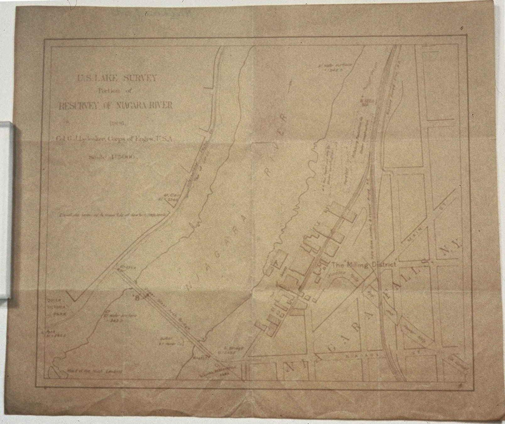
Ferro-gallic print. Images courtesy of Lois Olcott Price.
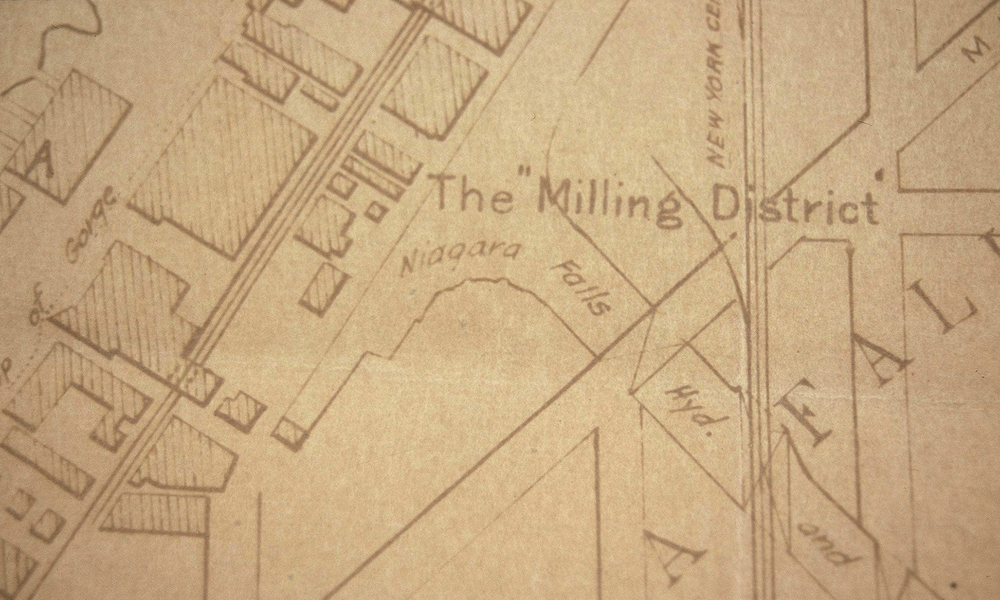
Ferro-gallic print detail. Images courtesy of Lois Olcott Price.
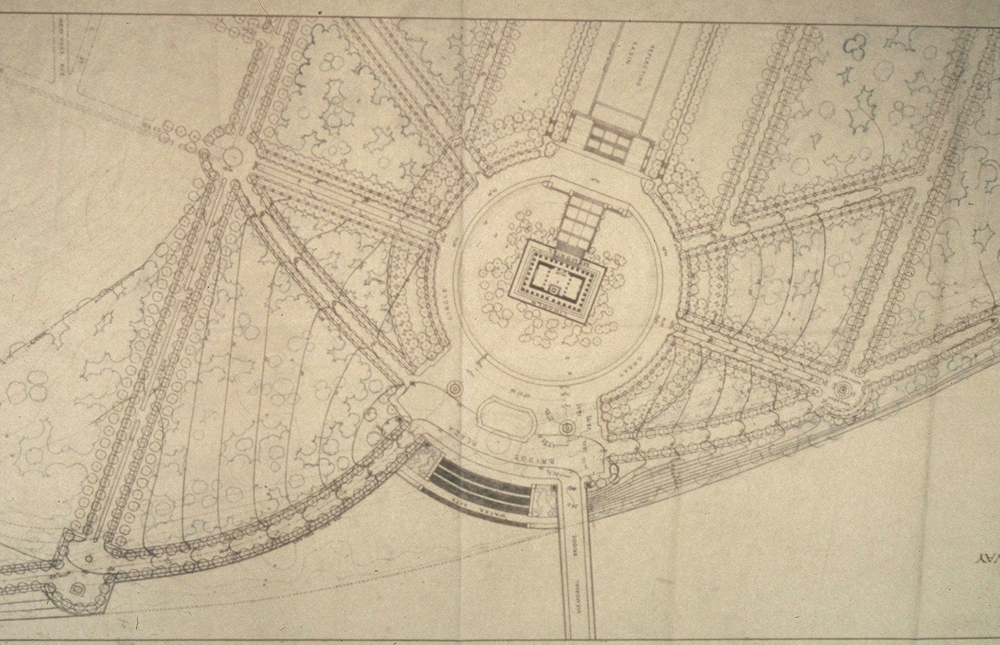
Ferro-gallic print. Images courtesy of Lois Olcott Price.
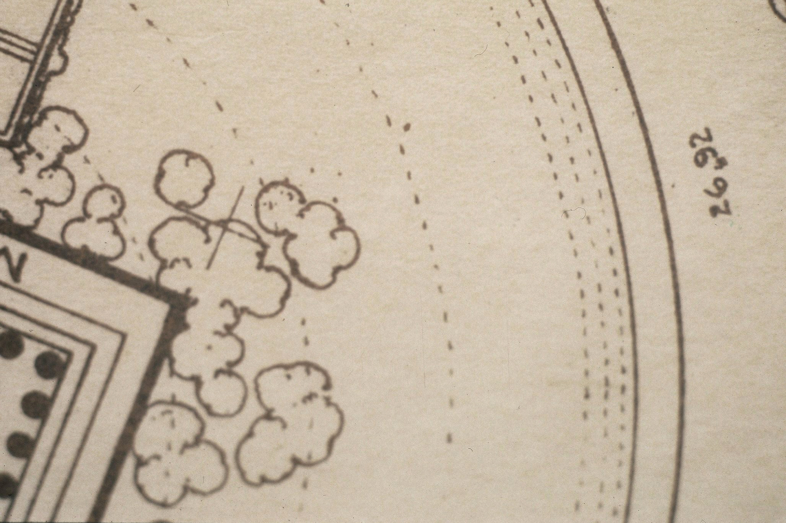
Ferro-gallic print detail. Images courtesy of Lois Olcott Price.
Synonyms
Iron gall print
Black-line process
Dates
1859 – 1930s
Prevalence
Rare
Support
Paper, occasionally drafting cloth
Fibers (paper, cloth)
Visible under low magnification
Ground Color
Light, usually white (likely yellowed or discolored)
Image/Lines
Monochrome (blue-black with metallic sheen, which may have faded to brown or dull black)
Description
Ferro-gallic prints are always positive images--dark lines on a light-colored ground. Although the lines were dark blue-black at the time of their creation, they are usually found faded to brown or dull black. Paper fibers are visible under low magnification. Depending upon the method of production, the image lines under magnification may either appear raised or burned into the paper surface. Ferro-gallic prints were conventionally used as studies or process prints, and they may have additional media and marginalia.
Composition
Support
Image/Text
Paper or drafting cloth
Iron gallo-tannate pigment
Deterioration
Ferro-gallic prints are unstable. Due to the presence of acid remaining in the support after processing, the support is likely to be brittle and yellowed. The lines of ferro-gallic prints are made up of ferric gallotannate, which is also acidic and may cause lacing of the paper support. Ferro-gallic prints are sensitive to light, and image lines may become brown, fade, or disappear completely. They should not be stored in contact with other prints, as the acidic prints may damage adjacent objects.
Risk Level
Moderately high. Ferro-gallic prints are highly acidic, frequently brittle, and very sensitive to light. Like iron gall ink, the image material is acidic and may degrade the paper support to the point of eating through it. Store in the dark in unsealed, unbuffered, and pH neutral enclosures or dividers. Keep them away from other collection materials so to curb the negative effects of acidic off-gassing.
Process
Ferro-gallic prints may be sensitized in one of two ways. Prior to 1900, the support was simply coated with a gum arabic or gelatin solution containing ferric salts. After 1900, the acidic developer was incorporated into the ferric salt-and-gelatin solution. Despite this difference, the process remained the same. The sensitized paper is then placed beneath a translucent master document or drawing and exposed to strong UV light: the master is used like a photographic negative, in which light is blocked in dark areas (e.g. lines/text) and allowed to pass through translucent spaces. As light exposes the ferric salts, the gelatin (or gum arabic) in these unblocked areas become water soluble. The paper is then washed in water in order to release the acidic developer and turn the ferric salts into a ferric gallotannate pigment, while removing the gelatin (or gum arabic) and residual ferric salts. The resulting image is qualitatively and nearly chemically the same as iron gall ink.
Background
The ferro-gallic process was originally developed by Alphonse Louis Poitevin in 1859 and was mostly used in Europe. It was phased out in the 1930s in favor of cheaper and more practical processes, such as the diazo print. Despite being more expensive and difficult than blueprinting, ferro-gallic prints were useful for producing clean copies of tracings, since the process allowed for corrections to be made during processing. Additionally, the ferro-gallic process produces the most ink-like lines of technical/architectural drawing reproduction processes, thereby allowing the production of imitation ink drawing multiples, which proved valuable for technical drawings.
Technical prints were generally not made with long-term stability in mind; most were created quickly and cheaply to serve an ephemeral, utilitarian purpose. As a result, many technical prints may retain chemical residues from processing. These residual chemicals may off-gas or cause damage if placed in contact with other prints.
Prints are usually large, and they are best stored horizontally in flat files, preferably those made of enameled steel, stainless steel, or anodized aluminum. Store different types of architectural prints separately in order to prevent contact degradation. Alkaline storage enclosures are not advised for ferro-gallic prints. Folders cut to drawer size are recommended, with less than 12 prints to a folder and with interleaving sheets placed between them (both neutral pH). Individual prints should be stored in polyester sleeves within folders in order to both protect particularly fragile items and separate formats from one another. Polyester sleeves also provide additional support during handling.
It may be acceptable to store the prints rolled if space for flat storage is not available, but brittle or otherwise fragile prints should not be rolled. Prints that are strong and flexible enough to be rolled must have an interior support: a neutral pH cardboard tube (over 3" diameter) itself wrapped in polyester or neutral paper. The rolled print and interior support may be wrapped in the neutral paper or polyester, and they should be stored horizontally, not upright. Prints should not be folded, since this will create fold lines that weaken the paper and cause it to tear. All storage materials should pass the Photographic Activity Test (PAT) as specified in ISO Standard 18916:2007.
Storage Orientation
Flat (preferred) or rolled.
Display Recommendations
Responsible display practices ensure the long-term preservation of collections. Facsimiles should be used whenever possible, and paper artifacts should not be displayed permanently. Light levels in the exhibition area should be kept low. Appropriate filters should be used to minimize exposure to ultraviolet light. Display cases should be enclosed and sealed to protect their contents, and items in cases should be securely framed or matted using preservation-quality materials that have passed the Photographic Activity Test (ISO 18916:2007).
Ferro-gallic prints should not be exhibited because they are extremely sensitive to light and are often brittle. Consider the use of facsimiles in place of original documents.
Aniline Print
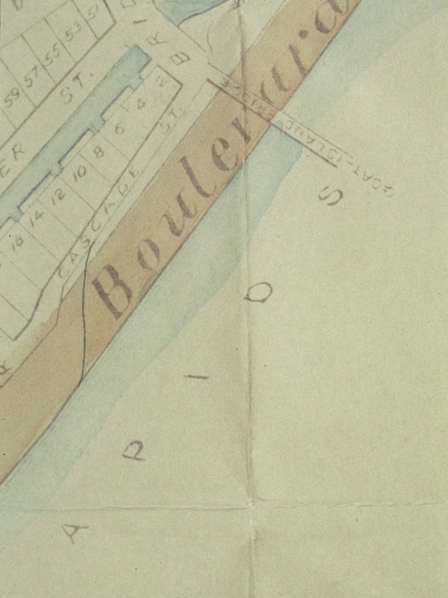
Aniline print. Images courtesy of Lois Olcott Price.
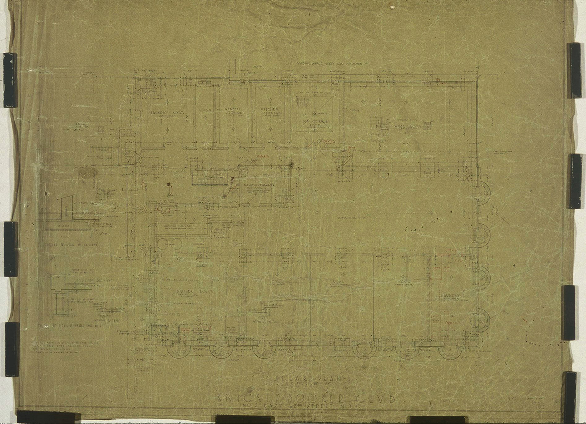
Aniline print. Images courtesy of Lois Olcott Price.
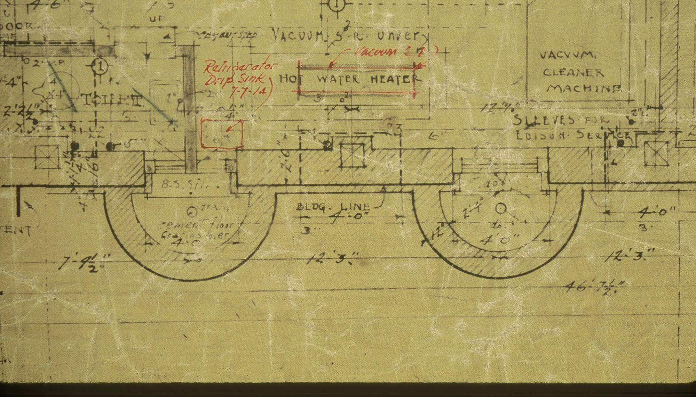
Aniline print. Images courtesy of Lois Olcott Price.
Synonyms
Green print
Chrome process
Endemann’s process
Vanadium process
Flexography
Dates
1864 – 1890s
Prevalence
Rare
Support
Paper or drafting cloth
Fibers (paper, cloth)
Visible
Ground Color
Greenish or yellowish tint
Image/Lines
Monochrome (violet, blue, or black; other colors possible, but rare)
Description
Aniline prints are always positive images. The image ground may be slightly flecked but is overall a slight greenish or yellow-beige tint. The green of the ground is the sensitized coating on the paper. The verso (back) will be lighter than the color of the support material. Like other aniline dye processes, the image or text is of low-contrast with soft lines. Image lines also appear to be deeply embedded within the support when viewed under magnification. The print may include additional coloring achieved through watercolor. Aniline prints resemble diazo prints but predate them by about 25 to 50 years.
Composition
Support
Image/Text
Paper or drafting cloth
Aniline dye ink
Deterioration
Aniline images will fade on exposure to light. The surface may exhibit white scratches, scuffs, and cracks, due to residual acids in the print. Resulting from the presence of residual (and frequently acidic) chemicals, paper supports will often be left brittle while cloth supports will become limp.
Risk Level
Moderate. UV light exposure is the primary risk to aniline prints by causing severe image fading. High temperature and high humidity will accelerate print deterioration. Residual chemicals will exacerbate breakdown and will cause structural degradation and yellowing. Due to the acidic nature of aniline prints, they should be segregated from other collection materials and stored in pH neutral enclosures.
Process
A support is sensitized by floating one side in an aniline chemical compound solution containing chromic salts before it is set to dry in a dark environment. This sensitized support is then placed under a translucent master document or drawing and exposed to strong UV light. The master is used like a photographic negative, in which light is blocked in dark areas (e.g. lines/text) and allowed to pass through translucent spaces. The image is then developed through the copy’s exposure to aniline fumes, which produces a positive image when it interacts with the chromic salts. The aniline print is then rinsed in an acidic bath to remove excess compounds.
Background
Introduced as a drawing and writing reprographic process in 1864, aniline prints rose in public favor quickly due to its relatively fast drying ink. Alongside the hectographic process, aniline printing was one of the most common processes for technical/architectural drawing reproductions before being supplanted by the blueprint at the end of the nineteenth century. A derivative aniline process branded as "flexography" was adopted in the 1940s for printing flexible product packaging.
Technical prints were generally not made with long-term stability in mind; most were created quickly and cheaply to serve an ephemeral, utilitarian purpose. As a result, many technical prints may retain chemical residues from processing. These residual chemicals may off-gas or cause damage if placed in contact with other prints.
Prints are usually large, and they are best stored horizontally in flat files, preferably those made of enameled steel, stainless steel, or anodized aluminum. Store different types of technical prints separately in order to prevent contact degradation. Alkaline storage enclosures are not advised for aniline prints due to the pH sensitivity of aniline dye. Folders cut to drawer size are recommended, with less than 12 prints to a folder and with interleaving sheets placed between them (both neutral pH). Individual prints may be stored in polyester sleeves within folders in order to protect particularly fragile items or to separate formats from one another. Polyester sleeves also provide additional support during handling.
It may be acceptable to store the prints rolled if space for flat storage is not available, but brittle or otherwise fragile prints should not be rolled. Prints that are strong and flexible enough to be rolled must have an interior support: a neutral pH cardboard tube (over 3" diameter) itself wrapped in polyester or neutral paper. The rolled print and interior support may be wrapped in the neutral paper or polyester, and they should be stored horizontally, not upright. Prints should not be folded, since this will create fold lines that weaken the paper and cause it to tear. All storage materials should pass the Photographic Activity Test (PAT) as specified in ISO Standard 18916:2007.
Storage Orientation
Flat (preferred) or rolled.
Display Recommendations
Responsible display practices ensure the long-term preservation of collections. Facsimiles should be used whenever possible, and paper artifacts should not be displayed permanently. Light levels in the exhibition area should be kept low. Appropriate filters should be used to minimize exposure to ultraviolet light. Display cases should be enclosed and sealed to protect their contents, and items securely framed or matted using preservation-quality materials that have passed the Photographic Activity Test (ISO 18916:2007).
Aniline dyes are highly sensitive to light, and they should not be exposed to more than 5,000 ft-c hours (50,000 lux hours) per year with a 3-year rest between displays.
Blueprint
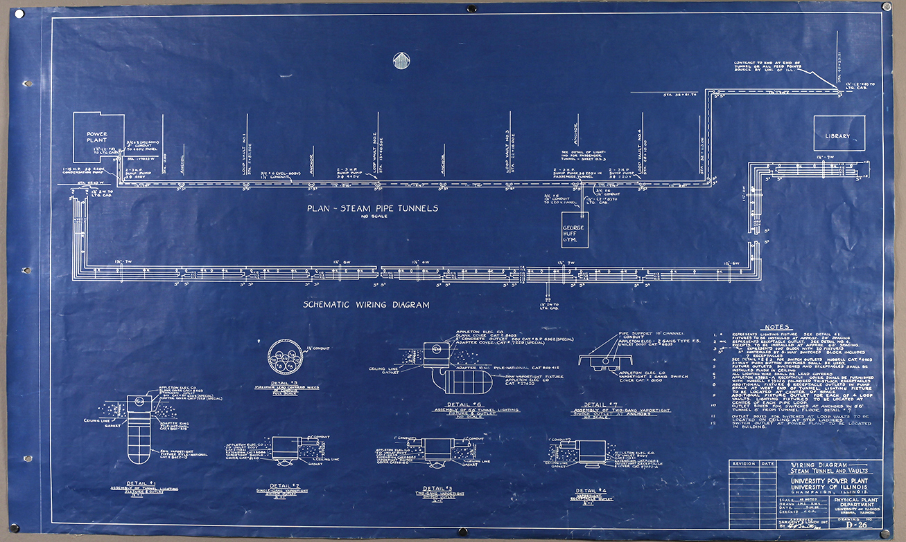
Blueprint. Courtesy of the Facilities & Services, UIUC, University of Illinois Board of Trustees.
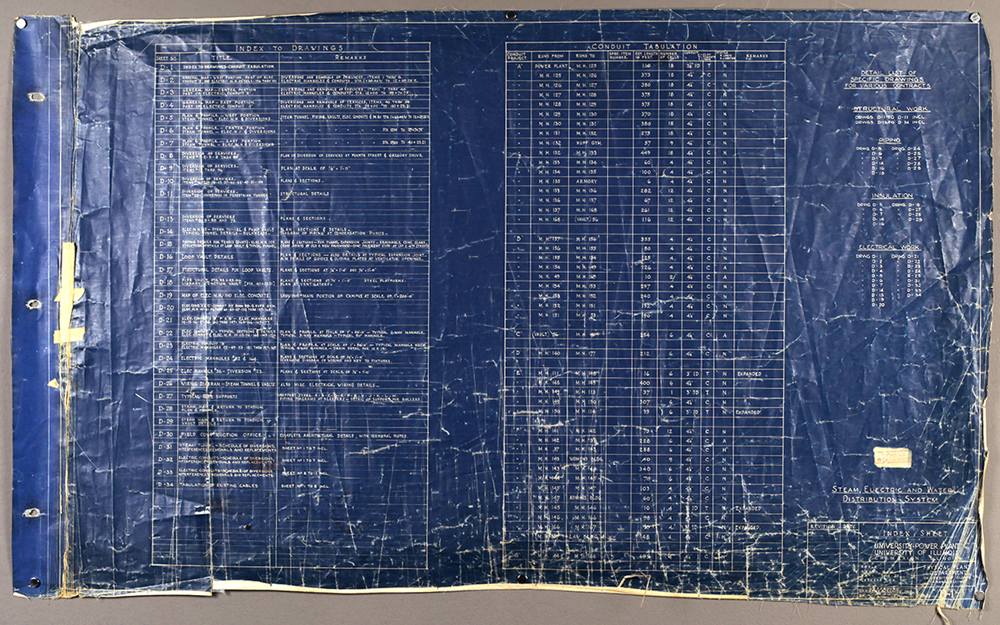
Blueprint. Courtesy of the Facilities & Services, UIUC, University of Illinois Board of Trustees.
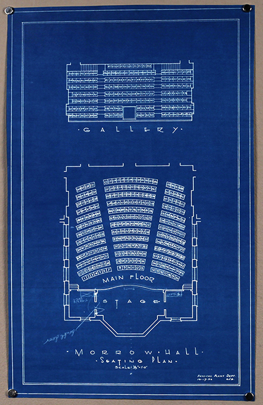
Blueprint. Courtesy of the Facilities & Services, UIUC, University of Illinois Board of Trustees.
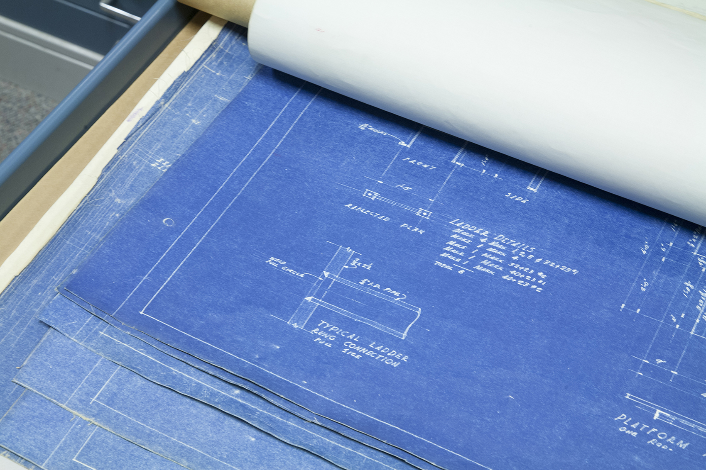
Blueprints in flat file storage. Courtesy of the Facilities & Services, UIUC, University of Illinois Board of Trustees.
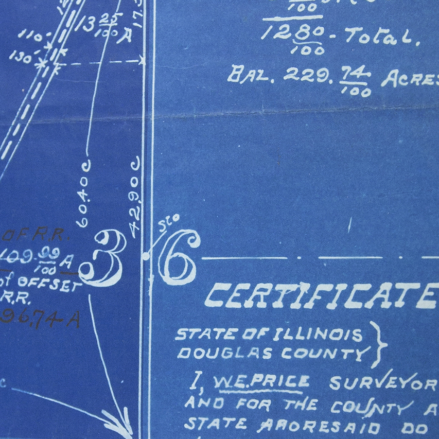
Blueprint detail exhibiting light fading. Courtesy of the Illinois History and Lincoln Collections, University Library, UIUC, University of Illinois Board of Trustees.
Synonyms - Blueprint
Cyanotype
Ferro-prussiate print
Synonyms - Positive Blueprint
Pellet print
Cyanotype positive
Cyanofer
Positive ferrotype
Dates
c. 1872 - present; technical uses, c. 1872 - 1950s
Prevalence
Common
Support
Paper or drafting cloth
Fibers (paper, cloth)
Visible
Ground Color
Prussian blue (negative print); white (positive print)
Image/Lines
Monochrome (white on negative print; blue on positive print)
Description
A blueprint is a single-layer print comprised of a blue pigment embedded in an uncoated paper or cloth fibers. The ground color is a brilliant "Prussian" blue with continuous tone. The fibers of the cloth or paper will be clearly visible and likely will be rough. The surface finish is extremely matte with no surface gloss due to the absence of a binder layer. Most blueprints are negatives (white image/text lines on a dark blue background), but sometimes positive images were also created to allow for easier reading. These positive prints (dark blue lines on a light ground) were known as pellet prints. The verso (back) of either type of print will likely be white, off-white, or the color of the support paper or cloth.
Composition
Support
Image/Text
Paper or drafting cloth
Blue pigment
Deterioration
Blueprints are very sensitive to light but are otherwise quite stable if kept in dark storage. Faded blueprints may regain substantial image density when kept in dark storage. Paper distortion is a common quality that results from the blueprint wet process. Some slight overall unevenness of the paper is not necessarily a deteriorative trait.
Risk Level
Moderately low. Blueprints are relatively stable and image permanent if kept in dark storage conditions and out of an alkaline pH environment. The integrity of the support paper is often the decisive factor in the long term preservation of blueprints.
Process
A sheet of heavy paper or cloth, which has first been sensitized with ferric ammonium citrate and potassium ferricyanide, is exposed through an overlaid drawing to sunlight or another UV light source. Wherever the light strikes the sensitized support, the ferric salts become ferrous salts. The support is immersed in a water bath after exposure, and a chemical reaction between the water and ferrous salts produces the Prussian blue pigment (ferric ferrocyanide). The ferric salts remaining in the unexposed areas are then washed away. This results in the white lines that create the image. The main difference in the process of the creating a pellet print was the addition of a colloid (e.g. dextrin, gum arabic, or gelatin) on the surface of the sensitized cloth or paper support.
Background
The term "blueprint" generally refers to line drawings reproduced by the cyanotype process for schematic or technical drawings. Blueprints/cyanotypes were most commonly produced between the 1870s and 1930s, but they are still made today. The cyanotype process was invented in the eighteenth century but did not attract much further development until John Frederick William Herschel's paper on the format in 1842. However, the process was still not widely adopted until the 1870s. The first commercial cyanotype paper was developed in France in 1872; the first commercial cyanotype producting machine was introduced to the United States in 1875. Pre-sensitized papers became available in 1876 from the Marion Company of Paris and were sold worldwide, including in the United States. Due to its affordability and simple processing, blueprints/cyanotypes were typically produced in-house by amateur photographers for the purpose of reproducing engineering and architectural designs. Beginning in the 1920s, machines were developed to produce complete prints from start to finish. During the 1930s, blueprinting began to lose its popularity due to the development of the diazo process, which used vapor to develop the image rather than immersion in a liquid bath. This was particularly important for technical prints in which dimensional changes could occur with the introduction of moisture. Thus, using a "dry" process was preferable in order to preserve the original scale of the drawing. The popularity of cyanotypes for non-technical uses underwent a revival in the 1960s. The blueprint/cyanotype process was widely used before the 1930s, and it represents one of the most widely held types of technical prints in collections.
Storage Environment
Cool storage (below 50 degrees) is recommended, and colder is better unless frequently used (frequent and sudden changes in temperature and relative humidity could result in physical stress to the object). Allowable Fluctuation: ±5°F; ±5% RH
Ideal
Temp.
32–40°F (0–4°C)
RH
30–40% RH
Storage Enclosure(s)
Technical prints were generally not made with long-term stability in mind; most were created quickly and cheaply to serve an ephemeral, utilitarian purpose. Many of these prints will retain chemical residues from processing. These residual chemicals may off-gas or cause damage if placed in contact with other prints.
Blueprints/cyanotypes should be stored in alkaline-free paper products in order to prevent fading of the blue pigment. Buffered paper should be avoided. Prints are usually large, and they are best stored horizontally in flat files, preferably those made of enameled steel, stainless steel, or anodized aluminum. Store different types of technical prints separately in order to prevent contact degradation. Folders cut to drawer size are recommended, with less than 12 prints to a folder and with interleaving sheets placed between them. Individual prints may be stored in polyester sleeves within folders in order to protect particularly fragile items or to separate formats from one another. Polyester sleeves also provide additional support during handling.
It may be acceptable to store the prints rolled if space for flat storage is not available, but brittle or otherwise fragile prints should not be rolled. Prints that are strong and flexible enough to be rolled must have an interior support: a neutral pH cardboard tube (over 3" diameter) should be wrapped in polyester or neutral paper. The rolled print and interior support may be wrapped in the neutral paper or polyester, and they should be stored horizontally, not upright. Prints should not be folded, since this will create fold lines that stress the paper fibers and cause it to tear. All storage materials should pass the Photographic Activity Test (PAT) as specified in ISO Standard 18916:2007.
Storage Orientation
Flat (preferred) or rolled.
Display Recommendations
Responsible display practices ensure the long-term preservation of collections. Facsimiles should be used whenever possible, and paper artifacts should not be displayed permanently. Light levels in the exhibition area should be kept low. Appropriate filters should be used to minimize exposure to ultraviolet light. Display cases should be enclosed and sealed to protect their contents. Items in cases should be securely framed or matted using preservation-quality materials that have passed the Photographic Activity Test (ISO 18916:2007).
If cyanotypes are displayed, it should be for no longer than 3 months at 3 ft-c maximum with a 3-year rest period between display cycles.
VanDyke Print
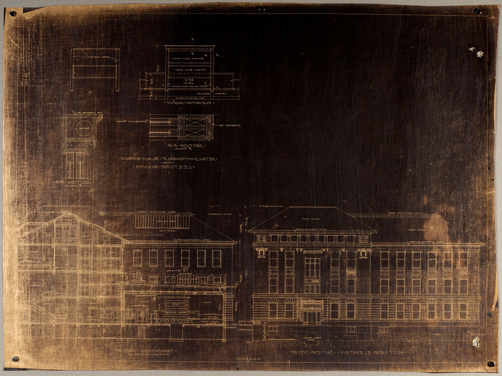
VanDyke print. Courtesy of Facilities & Services, UIUC, University of Illinois Board of Trustees.
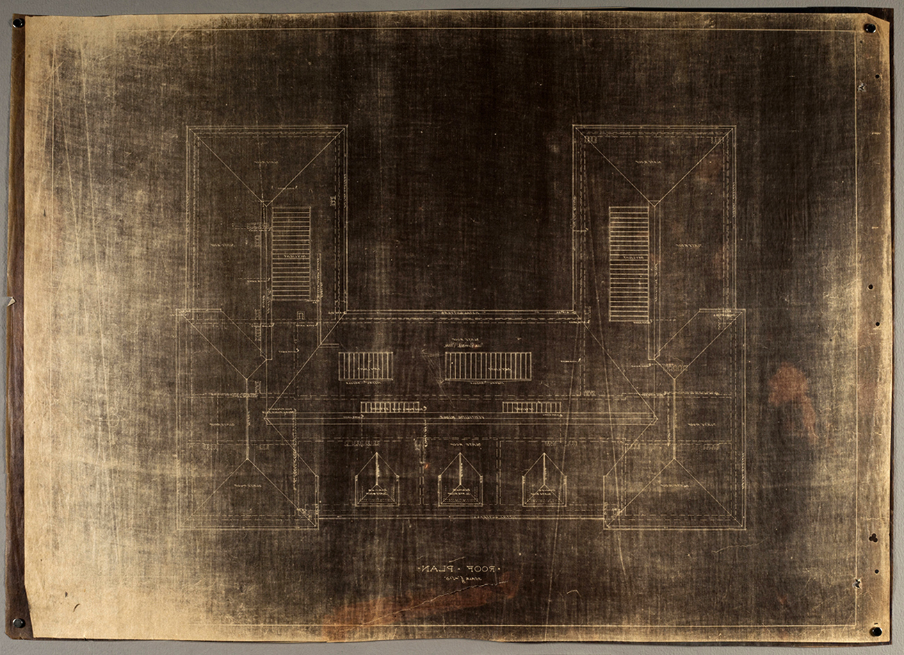
VanDyke print. Courtesy of Facilities & Services, UIUC, University of Illinois Board of Trustees.
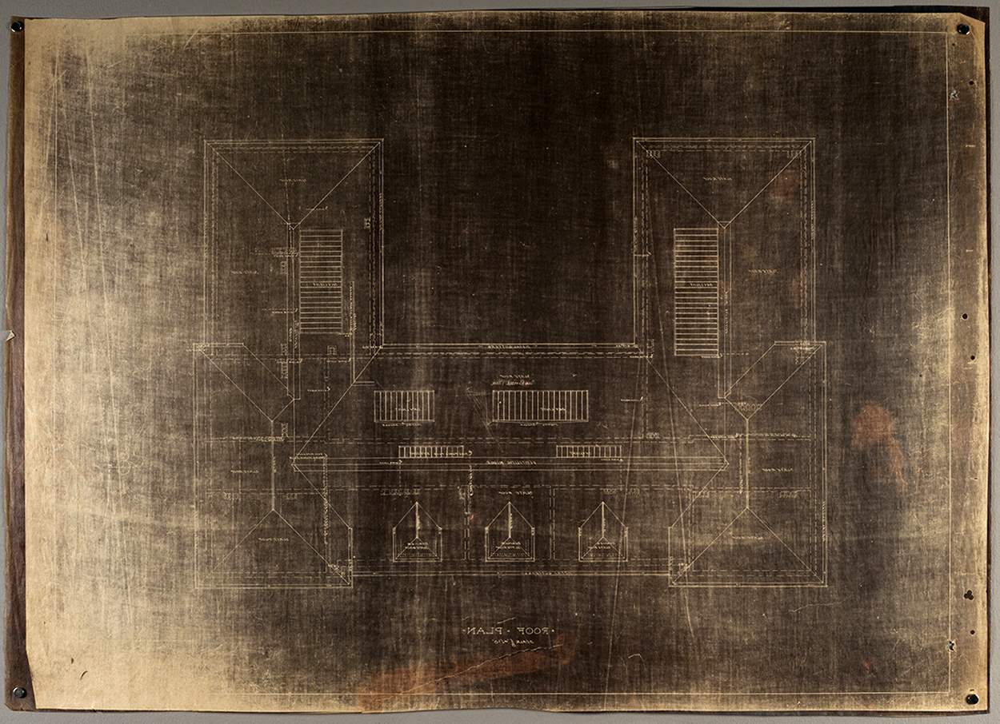
VanDyke print. Courtesy of Facilities & Services, UIUC, University of Illinois Board of Trustees.
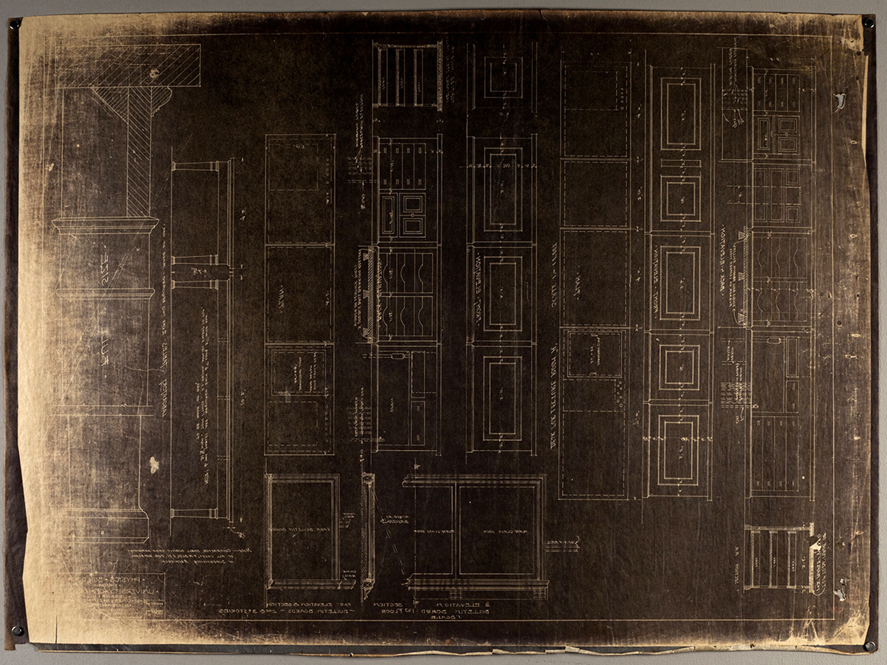
VanDyke print. Courtesy of Facilities & Services, UIUC, University of Illinois Board of Trustees.
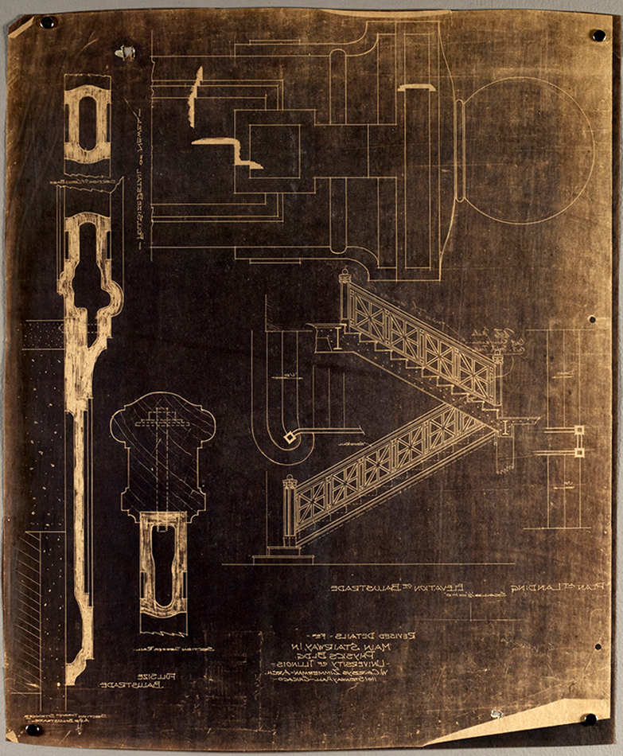
VanDyke print (back).
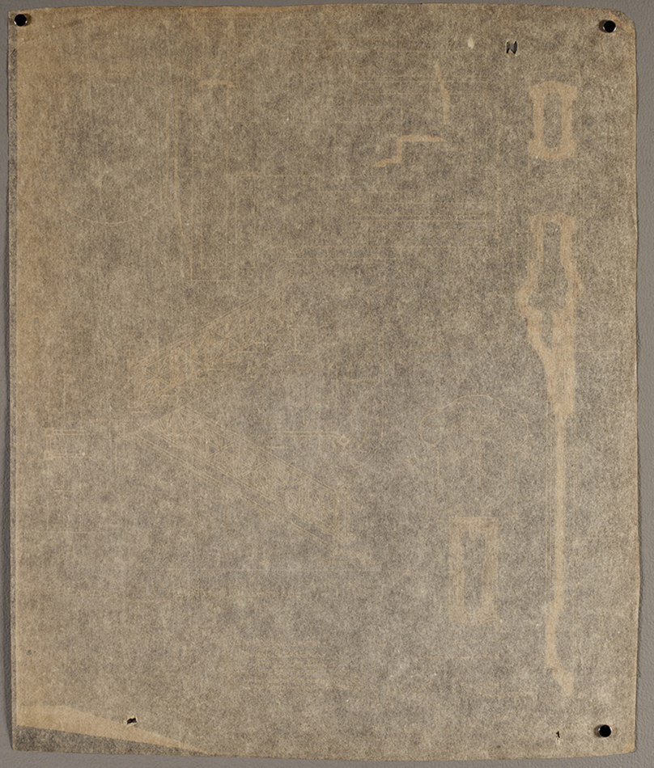
VanDyke print (front).
Synonyms
Brownprint
Brownline
Solar paper print
Silver paper print
Sepia process
Maduro
Dates
c. 1890 – early 1960s
Prevalence
Fairly common
Support
Paper, usually light- or medium-weight
Fibers (paper)
Visible in highlights
Ground Color
Brown (negative print); white (positive print)
Image/Lines
Monochrome (white on negative print; brown on positive print)
Description
VanDyke prints may be found as either a positive or negative image on a paper support. In either case, the brown of the image will exhibit a slightly cool, metallic quality when viewed under light. The brown image material will appear to be embedded into the fibers of the paper support. Negative VanDyke prints (white lines on a brown ground) were typically created as an internegative and used in service of creating a final blueprint or a positive VanDyke. Positive VanDyke prints (brown lines on a white ground) often resemble sepia diazo prints, but the uniformity of the positive VanDyke’s "white" paper ground sets it apart from the speckled, "dirty" ground of a sepia diazo. The brown lines of a VanDyke print are also generally cooler in tone than those of a sepia diazo. VanDyke prints are generally high contrast. Blue staining on the verso (back) is the result of residual iron salts.
Composition
Support
Image/Text
Paper
Silver and iron deposits
Deterioration
Residual chemicals from image processing may cause the image to yellow and support to weaken. VanDyke prints are prone to silvering and may yellow significantly, especially if they were not properly washed during processing. Deterioration characteristics and handling recommendations are on the whole similar to those for silver gelatin prints, photostats, and other silver-based photographic processes.
Risk Level
Moderate. Exposure to air pollutants is a significant threat to silver images, and warm, humid environments will accelerate these destructive effects. Due to the residual chemicals in VanDyke prints and their sensitivity to airborne pollutants, it is recommended that they be stored in polyester sleeves.
Process
A negative VanDyke was typically created as an internegative and was used in the service of creating a final blueprint or positive VanDyke print. The production process for creating VanDyke prints is similar to that used for the production of blueprints, with the addition of a fixing bath. The support paper is first coated with a sensitizing solution comprised of silver salts, iron salts, and an organic acid. After this coating is dried, the paper is placed in direct contact with an original drawing or intermediate negative and exposed to light. The ferric salts are chemically altered when exposed to light. The exposed print is rinsed in water in order to release the organic acid in the coating. This acidity creates a reaction between the iron and silver and produces a brown color in the exposed areas. The unexposed ferric salts remain water soluble and are washed away, leaving the support paper visible. The print is placed in a fixing bath, rinsed a final time, and then dried.
Background
The process used to create VanDyke prints was patented by H. Shawcross, first in Paris in 1889 and then three years later in England. The process is named, however, after a man with the surname Vandyke, who patented a similar process in 1901. VanDyke prints were produced beginning in the 1890s through the early 1960s. As with other wet processes, the VanDyke process was phased out by the increasing use of diazo prints. Diazo prints became preferred because their dry processing eliminated any concern for dimensional variations, which were caused by the introduction of moisture. VanDyke prints were typically used as internegatives, whose final product was either a positive blueprint or positive VanDyke print. The process was useful for reproducing damaged originals and very faint images like pencil drawings.
Technical prints were generally not made with long-term stability in mind; most were created quickly and cheaply to serve an ephemeral, utilitarian purpose. As a result, many of these prints may retain chemical residues from processing. These residual chemicals may off-gas or cause damage if placed in contact with other prints. Always segregate VanDykes from diazo prints, which contain the silver-bleaching chemical thiourea.
Prints are usually large, and they are best stored horizontally in flat files, preferably those made of enameled steel, stainless steel, or anodized aluminum. Store different types of architectural prints separately in order to prevent contact degradation. Folders cut to drawer size are recommended, with less than 12 prints to a folder and with interleaving sheets placed between them (both alkaline or neutral pH). Individual prints should be stored in polyester sleeves within folders in order to both protect particularly fragile items and separate formats from one another. Polyester sleeves also provide additional support during handling.
It may be acceptable to store the prints rolled if space for flat storage is not available, but brittle or otherwise fragile prints should not be rolled. Prints that are strong and flexible enough to be rolled must have an interior support: a neutral pH cardboard tube (over 3" diameter) itself wrapped in polyester or neutral paper. The rolled print and interior support may be wrapped in the neutral paper or polyester, and they should be stored horizontally, not upright. Prints should not be folded, since this will create fold lines that weaken the paper and cause it to tear. All storage materials should pass the Photographic Activity Test (PAT) as specified in ISO Standard 18916:2007.
Storage Orientation
Flat (preferred) or rolled. Always segregate VanDykes from diazos, which contain the silver-bleaching chemical thiourea.
Display Recommendations
Responsible display practices ensure the long-term preservation of collections. Facsimiles should be used whenever possible. Paper artifacts should not be displayed permanently. Light levels in the exhibition area should be kept low. Appropriate filters should be used to minimize exposure to ultraviolet light. Display cases should be enclosed and sealed to protect their contents, and items securely framed or matted using preservation-quality materials which have passed the Photographic Activity Test (ISO 18916:2007).
If originals are displayed, they should not be displayed for longer than 3 months at 3 ft-c maximum with a 3-year rest period between display cycles.
Photostat (Architecture)
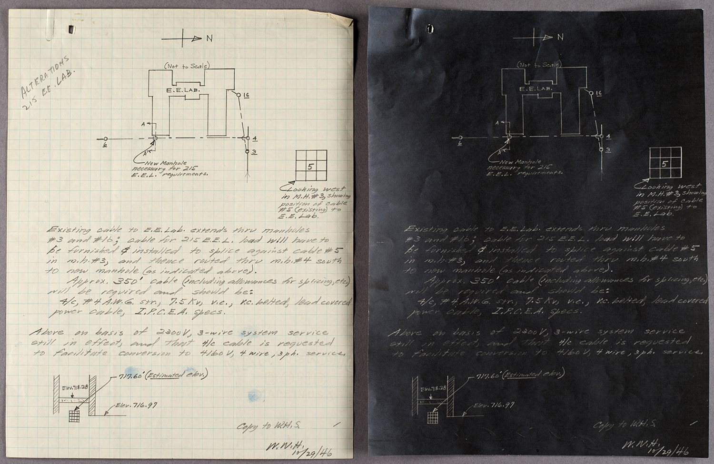
Photostat alongside original document. Courtesy of Facilities & Services, UIUC, University of Illinois Board of Trustees.
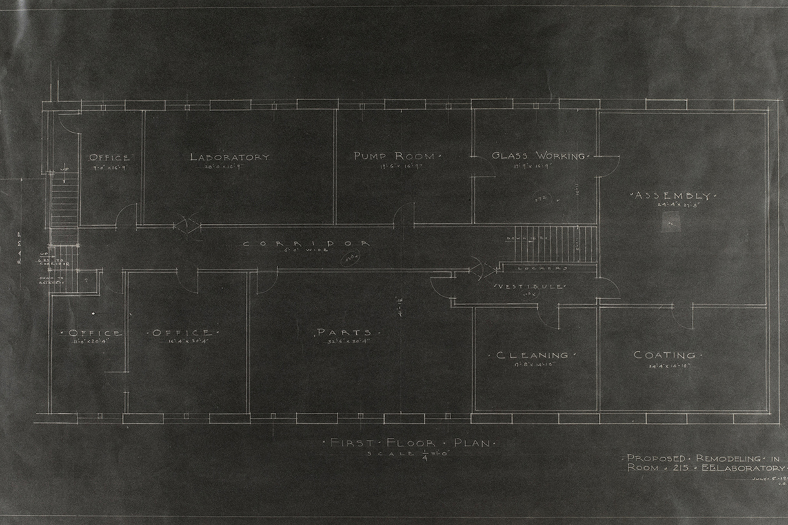
Photostat. Courtesy of Facilities & Services, UIUC, University of Illinois Board of Trustees.
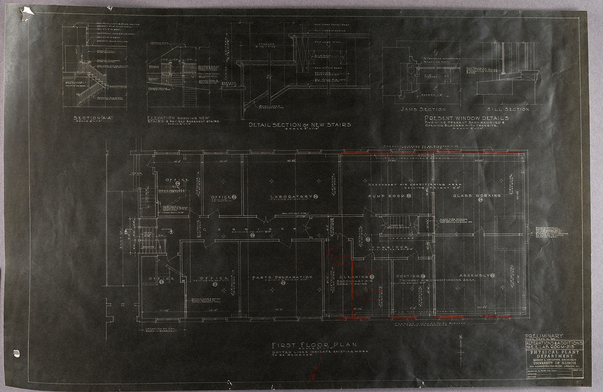
Photostat in raking light. Courtesy of Facilities & Services, UIUC, University of Illinois Board of Trustees.
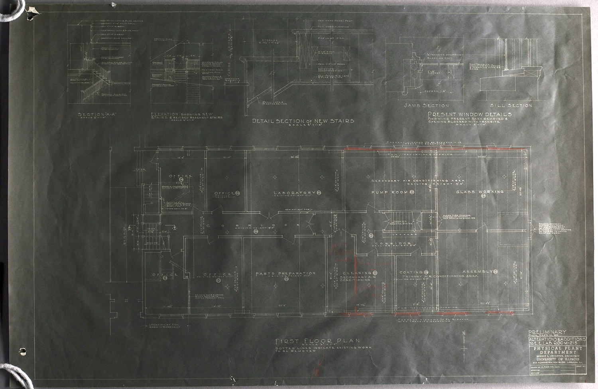
Photostat. Courtesy of Facilities & Services, UIUC, University of Illinois Board of Trustees.
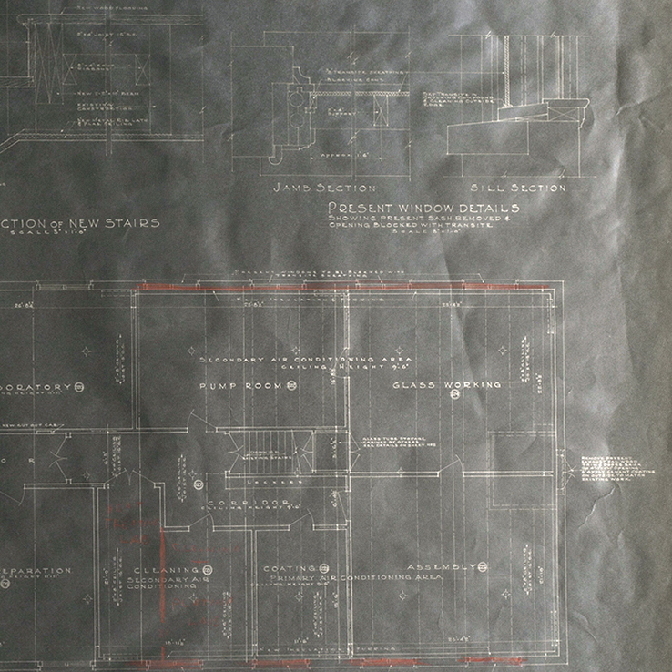
Photostat paper surface gloss apparent in raking light.
Synonyms
Photostatic print
Rectigraph
Stat
Dates
1909 – c. 1980, use declines after 1950
Prevalence
Fairly common
Support
Sensitized photographic paper (medium-weight), drafting cloth, vellum paper
Fibers (paper, cloth)
Visible in highlights
Ground Color
Black (negative); white (positive)
Image/Lines
Monochrome (white on negative print; black on positive print)
Description
The image may be negative or positive, although negatives (i.e. white image/text on black background) are more common. The image/text is comprised of silver particles, as in silver gelatin DOP prints. Copies are similar to silver gelatin black and white photographs, including the tendency to exhibit silver mirroring. The image may be either high-contrast black and white or, if produced from a color or pencil-drawn original, black and white with shades of gray. The paper is thinner than most photographic paper as it lacks a baryta layer and has thinner emulsion. The largest possible print size was 8 ½" × 11" until the 1920s, when prints began to be made up to 18" × 24". Final prints as large as 40" × 60" could be produced by commercial photo labs specializing in architectural and engineering drawings.
Composition
Support
Binder/Emulsion
Image/Text
Paper, drafting cloth, or vellum paper
Gelatin
Silver
Deterioration
Preservation of photostatic prints is nearly identical to the preservation properties of silver gelatin DOP prints. Photostatic prints are prone to silvering and may yellow significantly, especially if they were not properly washed. For more information, see Photographic Prints.
Risk Level
Moderately low. Exposure to air pollutants is often the significant prolonged threat to silver image materials, but warm and humid environments will also accelerate the destructive effects.
Process
Photostat copy machines were basically large cameras that used a prism to produce a right-reading image. Each exposure produced one print, which was usually a negative. In 1953, Kodak released a direct-positive process that allowed for the production of positive copies from a positive original. A positive image could also be produced by creating a negative copy and copying the negative again to create a positive image. After exposure, the paper was placed in a developing bath beneath the camera and then into a fixer bath. Processing was completed in darkroom conditions. The print was then washed in water, with the excess water removed by squeegee after taking the print out of the final bath. The print was finally dried by one of three procedures: pressing between blotters, passing through a set of heated rollers, or drying face-down on glass (in order to create a glossy finish).
Background
The first commercially produced photostatic copy machine was the rectigraph, which was first manufactured in Rochester, NY in 1909. Photostat prints of architectural drawings became more common after 1920, when larger print sizes became available. By 1936, photostat papers were available in a range of grades and finishes. Sensitized fabric (e.g. Sensitex) could also be used in place of paper. Although Eastman Kodak Company introduced a direct-positive process in 1953, the popularity of photostatic copying declined over the next several decades.
Technical prints were generally not made with long-term stability in mind; most were created quickly and cheaply to serve an ephemeral, utilitarian purpose. As a result, many technical prints may retain chemical residues from processing. These residual chemicals may off-gas or cause damage if placed in contact with other prints.
Prints are usually large, and they are best stored horizontally in flat files, preferably those made of enameled steel, stainless steel, or anodized aluminum. Store different types of architectural prints separately in order to prevent contact degradation. Acid-free (pH 7.2-9.5) enclosures and/or folders strongly advised. Folders cut to drawer size are recommended, with less than 12 prints to a folder and with interleaving sheets placed between them. Individual prints may be stored in polyester sleeves within folders in order either to protect particularly fragile items or to separate formats from one another. Polyester sleeves also provide additional support during handling.
It may be acceptable to store the prints rolled if space for flat storage is not available, but brittle or otherwise fragile prints should not be rolled. Prints that are strong and flexible enough to be rolled must have an interior support: a neutral pH cardboard tube (over 3" diameter) itself wrapped in polyester or neutral paper. The rolled print and interior support may be wrapped in the neutral paper or polyester, and they should be stored horizontally, not upright. Prints should not be folded, since this will create fold lines that weaken the paper and cause it to tear. All storage materials should pass the Photographic Activity Test (PAT) as specified in ISO Standard 18916:2007.
Storage Orientation
Flat (preferred) or rolled.
Display Recommendations
Responsible display practices ensure the long-term preservation of collections. Facsimiles should be used whenever possible, and paper artifacts should not be displayed permanently. Light levels in the exhibition area should be kept low. Appropriate filters should be used to minimize exposure to ultraviolet light. Display cases should be enclosed and sealed to protect their contents, and items in cases should be securely framed or matted using preservation-quality materials that have passed the Photographic Activity Test (ISO 18916:2007).
If the print appears well-processed and stable, it may be displayed for up to 30,000+ ft-c hours (300,000 lux hours) per year with a 1-year rest between displays. However, photostat prints were often poorly processed, so a more conservative approach to display may be required (e.g. 5,000 ft-c hours [50,000 lux hours] per year with a 3-year rest between displays).
Wash-Off Print
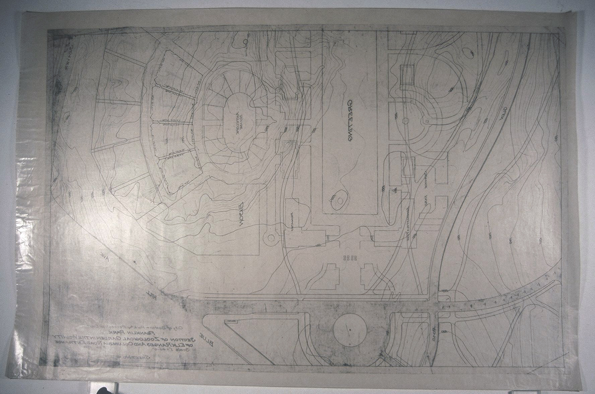
Wash-off print with apparent surface gloss. Images courtesy of Lois Olcott Price.
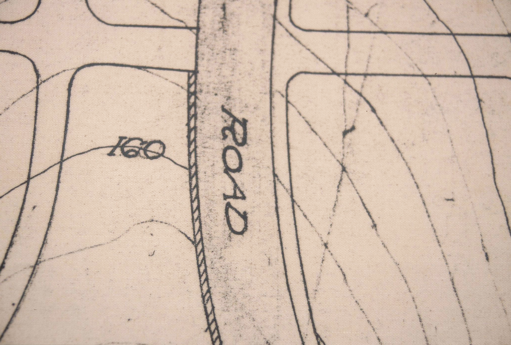
Wash-off print detail. Images courtesy of Lois Olcott Price.
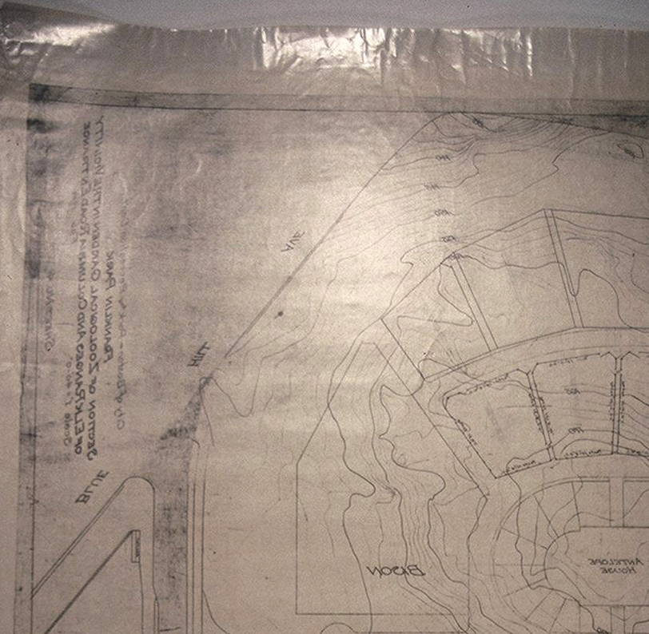
Wash-off paper surface gloss.
Synonyms
CB print; "See-Bee" print
Dupro process
Photoprint
Photo-litho
Thermoline Wash-Off Film
Dates
1920s – present
Prevalence
Fairly common
Support
Drafting cloth (pre-1950), vellum paper, or polyester (post-1950)
Ground Color
Light, usually white (may be discolored)
Image/Lines
Black
Description
Wash-off prints are always positive images. The image may be printed in reverse. The image lines or text are strong, black, and ink-like, and they appear to sit on the surface of the support in slight relief. Due to these qualities, wash-off prints are often mistaken for original ink drawings. A metallic sheen may also be observed in the image material. While the image is high contrast and the ground is generally clean and smooth, sometimes tiny black flecks left over from the emulsion may be littered across the whitespace. Early support materials were frequently glossy, medium-weight tracing cloth; prints were also made on vellum tracing paper and polyester (Mylar) by the 1950s. If on cloth, the ground may be slightly discolored or stained. Images were often printed in reverse to be used as reproducibles.
Composition
Support
Binder/Emulsion
Image/Text
Drafting cloth, vellum paper, polyester
Gelatin
Silver
Deterioration
Preservation factors of a wash-off print are similar to those of a silver gelatin print. Wash-off prints may become oxidized causing the black image to turn warm brown or yellow. The black lines may also exhibit silver mirroring. Drafting cloth support (and ground) may discolor or stain over time. Prints made on plastic support may become brittle or yellowed depending on the type of plastic. Most documentation suggests polyester supports were used to make wash-off prints, which will not exhibit these deteriorative characteristics. For related information, see Photographic Prints.
Risk Level
Moderate. Exposure to air pollutants is a significant threat to silver images, and warm, humid environments will accelerate destructive effects. Although the full array of plastic support materials used is not definitively known, polyester film was the primary plastic base and will therefore be relatively stable. Regardless of the support material, high temperatures and high humid environments should be avoided.
Process
Wash-off prints were produced using a Vandyke negative as the intermediate image. The VanDyke negative itself was produced via contact printing from the original tracing. The final support material was sensitized with a silver halide sensitizing agent and an alkaline activated developer in a gelatin emulsion. The sensitized support was then exposed under the Vandyke negative, causing the exposed areas to become insoluble. The non-image areas were then washed away in water, and the print was immersed in a highly alkaline activating solution that then developed and hardened the image. A final bath removed the developer. At this point, the image could be altered by wiping the surface with cotton or a camel hair brush. Some manufacturers recommended that the final wash be followed by an additional fixer bath to further harden the image. The image was then hung to dry.
Background
One of the earliest silver-based processes used for drawing duplication, the wash-off process was developed in the early 1920s. Two companies claimed credit for creating the process: Charles Bruning Co. and Frederick Post Co., both of Chicago. It was advertized as an innovative process capable of reproducing the look of hand-drawn tracings without the time and cost. Wash-off prints were relatively expensive to produce compared to other architectural print processes. They were used to create duplicate copies of original tracings. Since the prints could be altered during processing, the process was also used either to produce clean copies of damaged, soiled, or discolored tracings or to make revisions to an original. Prior to development of vellum paper (plasticized cotton) and polyester film in the 1950s, wash-off prints existed primarily on glossy drafting cloth supports. Direct positive wash-off film had some success through the 1970s. Referred to as "wash-off Mylar," the wash-off process is still in limited use today. The prints are also known as "silver slicks" when made on matte polyester supports.
Technical prints were generally not made with long-term stability in mind; most were created quickly and cheaply to serve an ephemeral, utilitarian purpose. As a result, many technical prints may retain chemical residues from processing. These residual chemicals may off-gas or cause damage if placed in contact with other prints.
Prints are usually large, and they are best stored horizontally in flat files, preferably those made of enameled steel, stainless steel, or anodized aluminum. Store different types of architectural prints separately in order to prevent contact degradation. Folders cut to drawer size are recommended, with less than 12 prints to a folder and with interleaving sheets placed between them (both alkaline or neutral pH). Individual prints should be stored in polyester sleeves within folders in order to both protect particularly fragile items and separate formats from one another. Polyester sleeves also provide additional support during handling.
It may be acceptable to store the prints rolled if space for flat storage is not available, but brittle or otherwise fragile prints should not be rolled. Prints that are strong and flexible enough to be rolled must have an interior support: a neutral pH cardboard tube (over 3" diameter) itself wrapped in polyester or neutral paper. The rolled print and interior support may be wrapped in the neutral paper or polyester, and they should be stored horizontally, not upright. Prints should not be folded, since this will create fold lines that weaken the paper and cause it to tear. All storage materials should pass the Photographic Activity Test (PAT) as specified in ISO Standard 18916:2007.
Storage Orientation
Flat (preferred) or rolled.
Display Recommendations
Responsible display practices ensure the long-term preservation of collections. Facsimiles should be used whenever possible, and paper artifacts should not be displayed permanently. Light levels in the exhibition area should be kept low. Appropriate filters should be used to minimize exposure to ultraviolet light. Display cases should be enclosed and sealed to protect their contents, and items in cases should be securely framed or matted using preservation-quality materials that have passed the Photographic Activity Test (ISO 18916:2007).
Prints in stable condition may be exhibited for brief periods. Wash-off prints should not be exposed to more than 5,000 ft-c hours (50,000 lux hours) per year with a 3-year rest between displays. Use of facsimiles is recommended for display.
Diazo Print (Architecture)
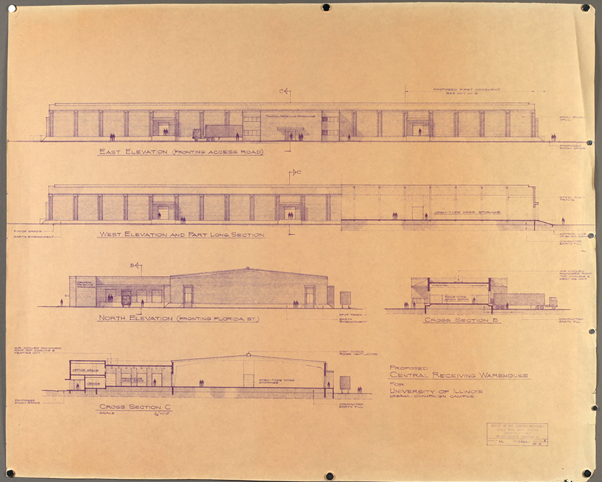
Diazo print. Courtesy of Facilities & Services, UIUC, University of Illinois Board of Trustees.
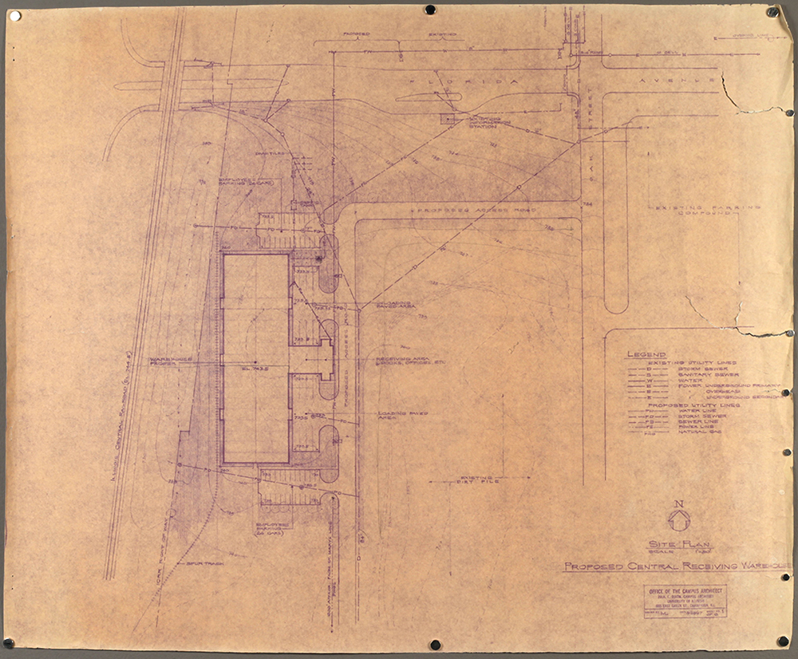
Diazo print. Courtesy of Facilities & Services, UIUC, University of Illinois Board of Trustees.
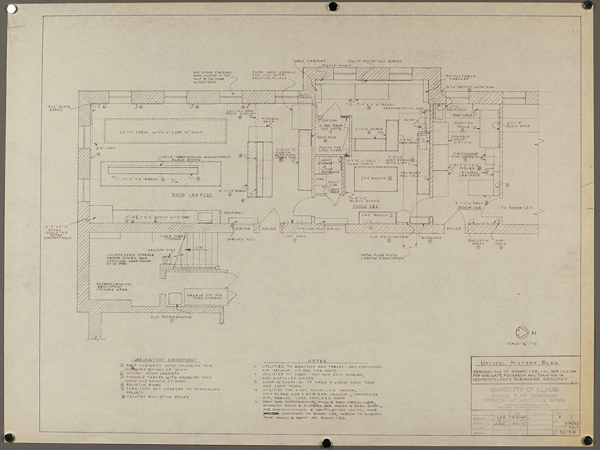
Diazo print. Courtesy of Facilities & Services, UIUC, University of Illinois Board of Trustees.
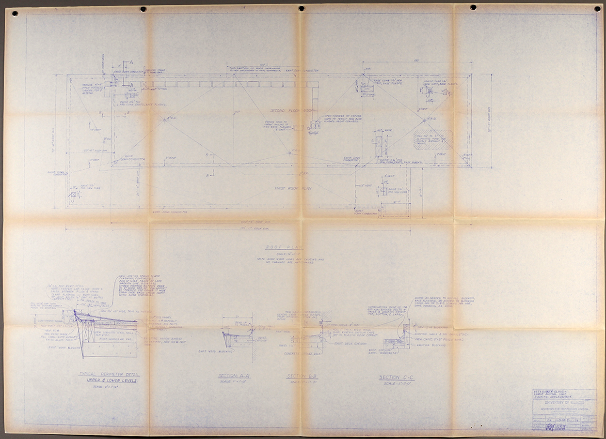
Diazo print. Courtesy of Facilities & Services, UIUC, University of Illinois Board of Trustees.
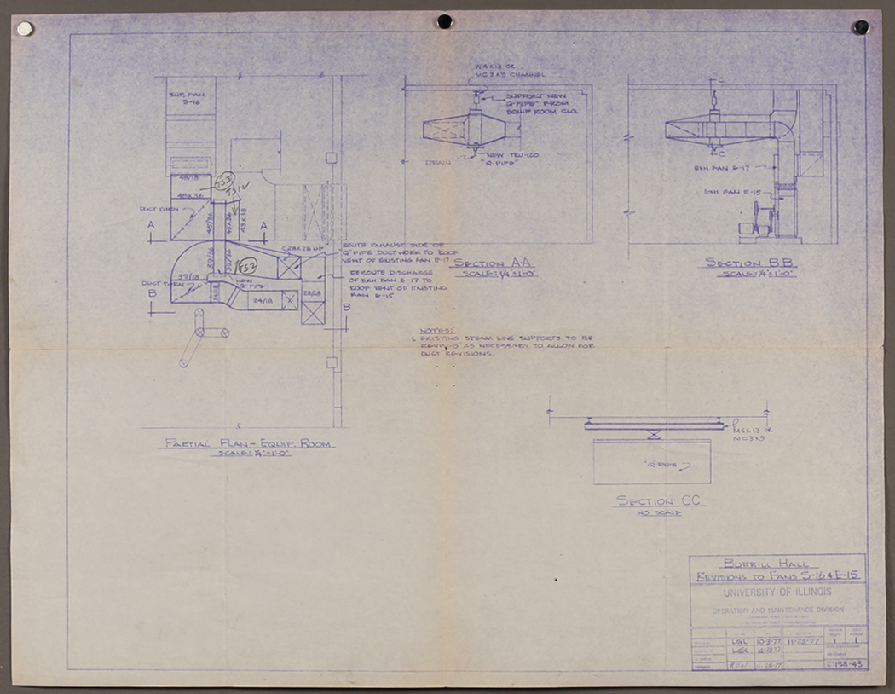
Diazo print. Courtesy of Facilities & Services, UIUC, University of Illinois Board of Trustees.
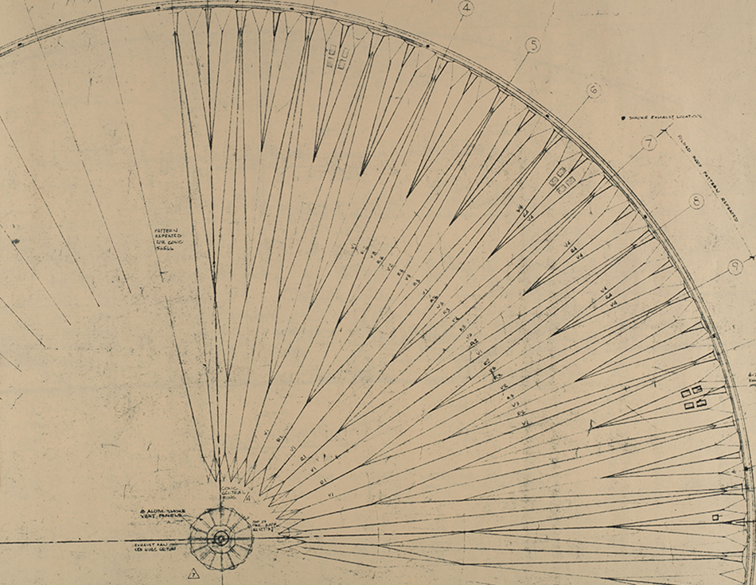
Diazo print. Courtesy of Facilities & Services, UIUC, University of Illinois Board of Trustees.
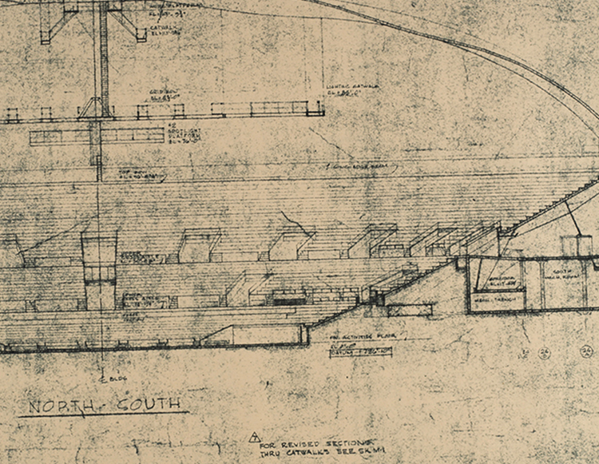
Diazo print. Courtesy of Facilities & Services, UIUC, University of Illinois Board of Trustees.
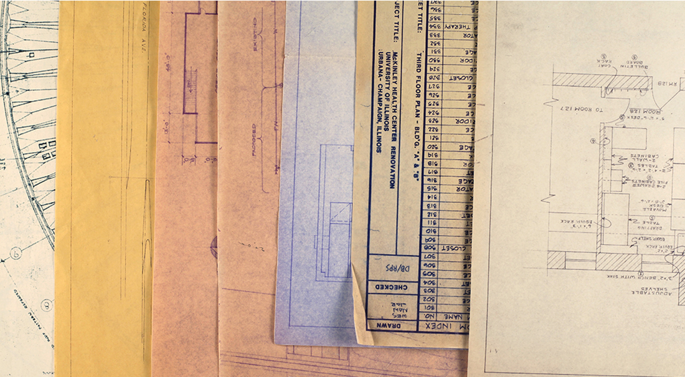
Various diazo tones and papers. Courtesy of Facilities & Services, UIUC, University of Illinois Board of Trustees.
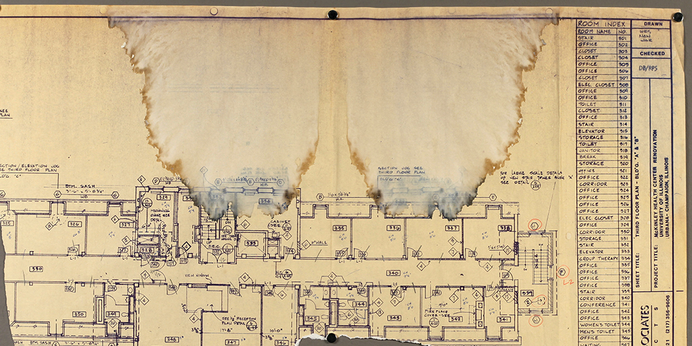
Diazo with water damage (recto).
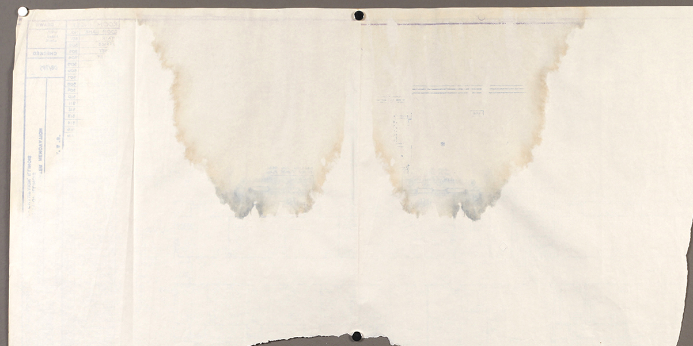
Diazo with water damage (verso).
Synonyms
Diazotype
Primuline process
Whiteprint
Ammonia print
Gas print
Direct print
Dyeline
Blueline
Blackline
Ozalid
Dates
1923 – present
Prevalence
Common
Support
Paper, plastic film (polyester, acetate), or drafting cloth
Fibers (paper, cloth)
Visible under low magnification
Ground Color
Varies; recto (front) often smudged, flecked, or "dirty" white. If on paper, the verso (back) will be noticeably bright white in contrast.
Image/Lines
Deep blue, purple, black, or sepia brown (other colors also possible)
Description
The diazo print (or diazo for short) is the result of a duplication process yielding a direct positive image. A diazo is an azo dye line drawing reproduction of an original line drawing (frequently deep blue or purple, but also black or brown) on a near-white background. Fibers will be visible under low magnification. Diazos have a smooth, lightly calendered surface. The verso (back) is usually white, but it may show signs of discoloration in the form of yellow stripes. May possess an ammonia odor, which can be transmitted to other documents stored together. Sepia diazo prints (brown lines on a flecked ground) are often printed in reverse; and, they may have a waxy or oily coating. "Ozalid" brand paper, a common, patented diazotype paper, will have brown-red lines and a faint rust-colored ground; it should also show the presence of a trade name watermark.
Composition
Support
Image/Text
Paper, drafting cloth, or plastic film
Azo dyes
Deterioration
Paper will likely be brittle due to residual chemicals, and the edges may also be discolored. Yellow and brown discoloration is more likely to occur on the image-side of the print and along the edges. The diazo dye-based image/text may be faded, particularly if housed in an acidic enclosure or exposed to light for an extended period. Residual chemicals and light exposure can together cause yellowish-brown discoloration in unexposed areas. Diazos must be stored separately from most photographic materials due to their destructive off-gassing. Sepia diazo prints, which were frequently used as intermediate images, may be coated with wax, paraffin, or oil to increase translucency. This coating may transfer to other objects and result in a characteristic reddish pink discoloration or greasy smudging.
Risk Level
Moderately high (older prints are at higher risk). All diazo prints should be assumed fragile and volatile. Diazos were often poorly processed and, as a result, will contain residual chemicals harmful to themselves and other materials stored in proximity. They are also known to transfer color dyes to adjacent papers. Diazos should therefore be stored separately from other materials if possible. Original drawings and any reformatted copies should be retained. Alkaline storage enclosures are not advised for diazo prints.
Process
The diazo process is similar to blueprinting and other early reprographic processes, with some chemical differences. The support is coated with a sensitizing solution containing a diazo compound and a coupler compound, in addition to other additives (i.e. optical brighteners). Depending on the coupler, the image color will vary (blue, purple, brown, etc.). Copies were produced from a translucent master drawing placed over the sensitized paper. They are then exposed to a strong UV light source: the master is used like a photographic negative, in which light is blocked in dark areas (e.g. lines, text) and allowed to pass through light areas (i.e. background). The underlying support is then exposed to an ammonia (alkaline) gas. This gas works to catalyze a chemical reaction to produce a print image that fixes in the paper or cloth.
Background
The diazo print was the most popular of the dry printing processes, and it is the most common large scale reprographic format found in late twentieth century collections. Diazo prints were made as early as the 1880s but the process was not widely used until 1923, when the process was commercialized and Ozalid paper was marketed by Kalle & Co. of Germany. The diazo process was primarily used for copying technical drawings beginning in the 1920s, but it was also used for office copying from the 1930s to 1970s. The diazo process gained popularity quickly due to its simple dry processing and ability to reproduce both pencil and ink lines. Diazos replaced blueprints in most architectural and engineering offices by the 1950s, and they continue to be produced to the present day.
Technical prints were generally not made with long-term stability in mind; most were created quickly and cheaply to serve an ephemeral, utilitarian purpose. Many of these prints will retain chemical residues from processing. These residual chemicals may off-gas or cause damage if placed in contact with other prints. Always segregate diazo prints from silver-image prints (i.e. Photostats, VanDykes, Wash-Offs), as the former contains thioura, a silver-bleaching chemical.
Prints are usually large, and they are best stored horizontally in flat files, preferably those made of enameled steel, stainless steel, or anodized aluminum. Store different types of technical prints separately in order to prevent contact degradation. Alkaline storage materials are not advised for diazos. Folders cut to drawer size are recommended, with less than 12 prints to a folder and with interleaving sheets placed between them (both alkaline-free). Individual prints may be stored in polyester sleeves within folders in order to either protect particularly fragile items or separate formats from one another. Polyester sleeves also provide additional support during handling.
It may be acceptable to store the prints rolled if space for flat storage is not available, but brittle or otherwise fragile prints should not be rolled. Prints that are strong and flexible enough to be rolled must have an interior support: a neutral pH cardboard tube (over 3" diameter) itself wrapped in polyester or neutral paper. The rolled print and interior support may be wrapped in the neutral paper or polyester, and they should be stored horizontally, not upright. Prints should not be folded, since this will create fold lines that weaken the paper and cause it to tear. All storage materials should pass the Photographic Activity Test (PAT) as specified in ISO Standard 18916:2007.
Storage Orientation
Flat (preferred) or rolled.
Display Recommendations
Responsible display practices ensure the long-term preservation of collections. Facsimiles should be used whenever possible, and paper artifacts should not be displayed permanently. Light levels in the exhibition area should be kept low. Appropriate filters should be used to minimize exposure to ultraviolet light. Display cases should be enclosed and sealed to protect their contents, and items in cases should be securely framed or matted using preservation-quality materials that have passed the Photographic Activity Test (ISO 18916:2007).
Although not quite as light-sensitive as cyanotypes, diazos are still very sensitive to light. It is advisable to consider the use of facsimiles in place of original documents for exhibition. If original prints are displayed, it should for no longer than 3 months at 3 ft-c maximum with a 3-year rest period between display cycles.
Hectograph Copy (Architecture)
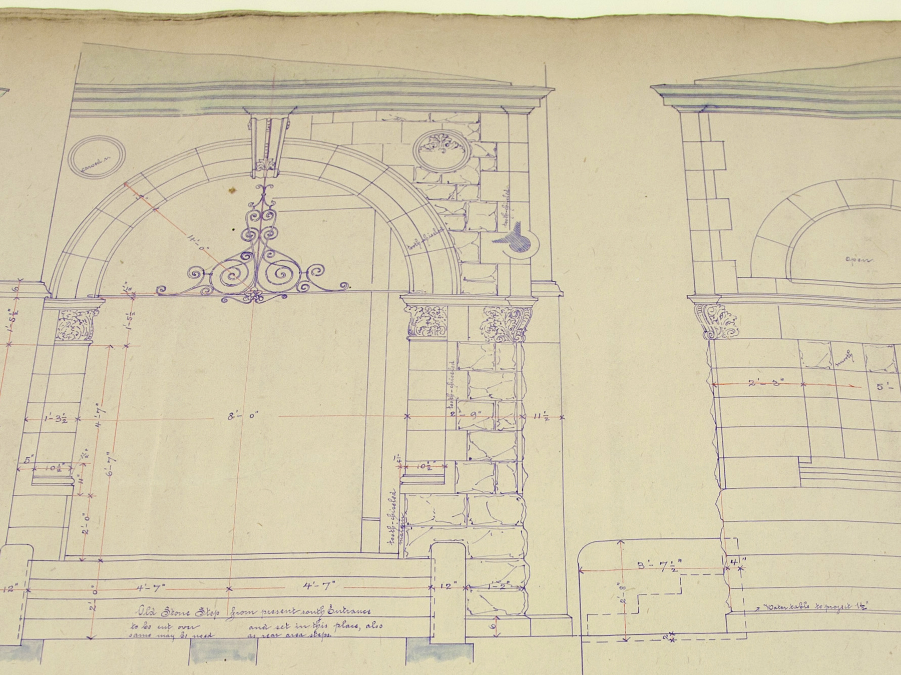
Hectograph. Courtesy of the Chicago History Museum: Chicago Board of Education - Architectural records for buildings by Schmidt, Garden & Erikson and related firms, 1993.285
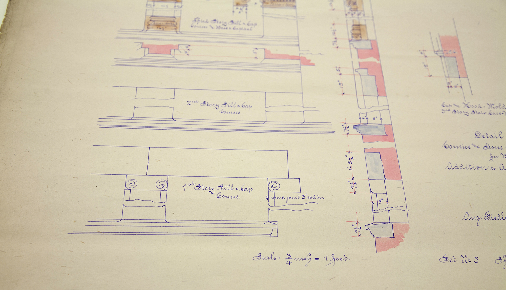
Hectograph. Courtesy of the Chicago History Museum: Chicago Board of Education - Architectural records for buildings by Schmidt, Garden & Erikson and related firms, 1993.285
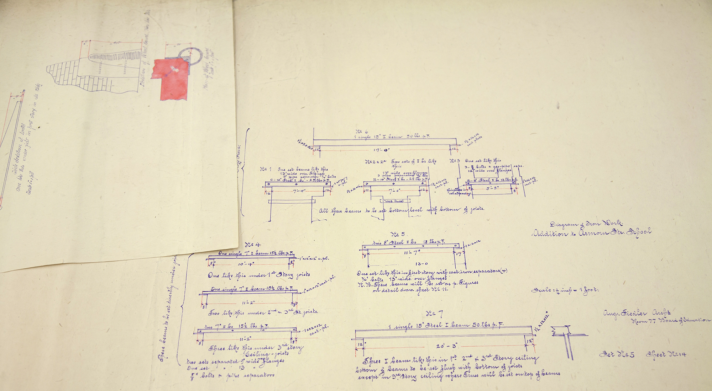
Hectograph. Courtesy of the Chicago History Museum: Chicago Board of Education - Architectural records for buildings by Schmidt, Garden & Erikson and related firms, 1993.285
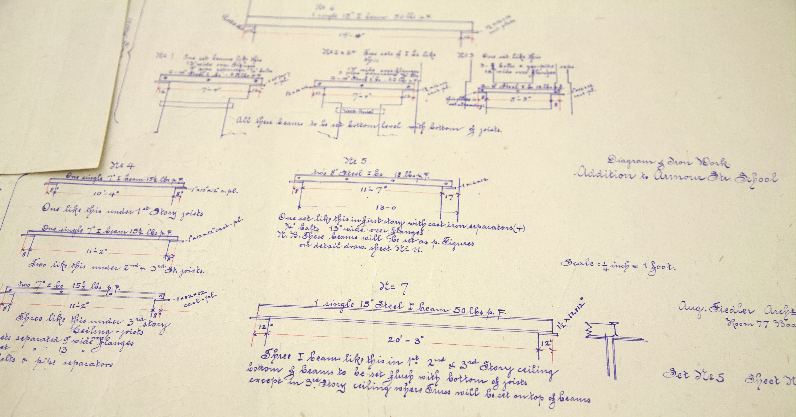
Hectograph. Courtesy of the Chicago History Museum: Chicago Board of Education - Architectural records for buildings by Schmidt, Garden & Erikson and related firms, 1993.285
Synonyms
Chromograph (UK)
Composition pad
Copygraph
Gelatine pad/method
Dry copy
Indirect method
Hektograph
Dates
c. 1870 - 1920s
Prevalence
Fairly common
Support
Paper (calendered: smooth, glossy), often with gelatin or alum/rosin sizing agent
Fibers (paper)
Not visible (highly calendered paper)
Ground Color
Bright white, some yellowing common
Image/Lines
Monochrome (violet or blue, most common)
Description
Hectograph image/text is commonly purple or blue color, but it can come in other colored aniline dyes, such as brown (c. 1900). Initially, the paper is bright white with a heavily finished, glossy surface to control ink use. The ground will likely have yellowed if on an acidic paper support. Hectography was most often used for handwritten and typewritten documents, although sometimes it was also used for technical drawings. Hectographs are very similar in appearance to diazo prints and spirit duplicates. Image lines will appear fuzzy, and image details will have low definition. Aniline dyes have a tendency to fade, particularly when exposed to UV light; the resulting image may be of low contrast.
Composition
Support
Image/Text
Paper with gelatin or alum/rosin sizing
Aniline dye ink
Deterioration
An image/text composed of aniline dye ink is very sensitive to UV light and water/moisture. Image fading and resulting loss of contrast is common. Some aniline ink migration and bleeding may result from water exposure. Although high-quality paper will retain white ground color (with slight discoloration), the more common wood pulp paper supports will be brittle and noticeably yellowed.
Risk Level
Moderate. UV light exposure is the primary risk to hectographic (aniline dye) prints. High temperature and high humidity will accelerate deterioration of both image and support materials. Quality of the paper support will weigh heavily in permanence. Residual acidic chemicals on the paper could accelerate breakdown. Alum/rosin sizing, which is impregnated in mechanical wood pulp papers, will lead to embrittlement and yellowing of the paper support.
Common Size(s)
Varied; typically large: dimensions may be over 4 feet.
Process
First, a gelatin-and glycerin pad is created to serve as a transfer plate. It is softened, dissolved, and then poured into a tray/frame, where it sets and firms up while retaining moisture. Next, a master document or drawing is rendered in hectographic (aniline) ink. Once the ink dries, the master is pressed face down onto the gelatin-and-glycerin pad surface and left to allow the water-soluble ink transfer as a negative image. An alternate method for applying ink to the pad involved the use of a stencil. In either case, the pad was then pressed in contact with copy paper, which absorbed the aniline ink and thus created a final positive copy. This could typically produce 40 to 60 copies, each successively lower contrast than the preceding copy.
Background
The hectographic process emerged as a result of the introduction of aniline inks and became common as an technical/architectural reprographic process around 1870. From that time, hectographs rose quickly in public favor since they were regarded as the most practical method of large-scale drawing duplication. Along with its contemporary, the aniline printing process, hectographs remained popular as a technical and engineering drawing duplication technique until the end of the nineteenth century, when blueprints became the new standard.
Technical prints were generally not made with long-term stability in mind; most were created quickly and cheaply to serve an ephemeral, utilitarian purpose. As a result, many technical prints may retain chemical residues from processing. These residual chemicals may off-gas or cause damage if placed in contact with other prints.
Prints are usually large, and they are best stored horizontally in flat files, preferably those made of enameled steel, stainless steel, or anodized aluminum. Store different types of architectural prints separately in order to prevent contact degradation. Alkaline storage enclosures are not advised for hectographs due to the pH sensitivity of aniline dye. Folders cut to drawer size are recommended, with less than 12 prints to a folder and with interleaving sheets placed between them (both neutral pH). Individual prints may be stored in polyester sleeves within folders in order to either protect particularly fragile items or separate formats from one another. Polyester sleeves also provide additional support during handling.
It may be acceptable to store the prints rolled if space for flat storage is not available, but brittle or otherwise fragile prints should not be rolled. Prints that are strong and flexible enough to be rolled must have an interior support: a neutral pH cardboard tube (over 3" diameter) itself wrapped in polyester or neutral paper. The rolled print and interior support may be wrapped in the neutral paper or polyester, and they should be stored horizontally, not upright. Prints should not be folded, since this will create fold lines which weaken the paper and cause it to tear. All storage materials should pass the Photographic Activity Test (PAT) as specified in ISO Standard 18916:2007.
Storage Orientation
Flat (preferred) or rolled.
Display Recommendations
Responsible display practices ensure the long-term preservation of collections. Facsimiles should be used whenever possible, and paper artifacts should not be displayed permanently. Light levels in the exhibition area should be kept low. Appropriate filters should be used to minimize exposure to ultraviolet light. Display cases should be enclosed and sealed to protect their contents, and items in cases should be securely framed or matted using preservation-quality materials that have passed the Photographic Activity Test (ISO 18916:2007).
Hectographs were made using aniline dyes that are highly sensitive to light; they should not be exposed to more than 5,000 ft-c hours (50,000 lux hours) per year with a 3-year rest between displays.
Gel-Lithograph
Synonyms
Ferro-gelatin
Lithoprint
Gel-litho
Jelly print
Cyanotype gelatin
Graph process
Fotol printing
Dates
c. 1910 – 1950s
Prevalence
Rare
Support
Drafting cloth or paper
Fibers (paper, cloth)
Partially visible
Ground Color
Light, usually off-white (may be slightly discolored)
Image/Lines
Monochrome (black but other colors possible)
Description
Gel-lithographs are often identified by their dense black image lines, although nearly any color is possible. Gel-lithos are often mistaken for original ink drawings due to the intensity of the ink color. If made of black carbon ink, lines will exhibit little to no fading and will appear sharp. The ground color is light, often off-white, but may be discolored. As this is a lithographic process, the ink will appear to sit on top of the support (paper, drafting paper) surface: this effect will be particularly noticeable under magnification. Most prints on drafting cloth will lose whatever glossy surface finish they once had on the image-side due to exposure to the gelatin pad. Surface finish loss is not necessarily true for the edges of the cloth, which will remain glossy after avoiding contact with the transfer pad. Gel-lithos are occasionally printed in reverse. Any reverse-reading text will be a clear indication. Gel litho images were also printed on the verso (back) of a semi-translucent drafting cloth to illustrate proposed changes.
Composition
Support
Image/Text
Drafting cloth or paper
Oil-based carbon black ink
Deterioration
Gel-lithograph images rendered in black ink are very stable. Under reasonable conditions, pigment-based black images will remain very stable. Color inks will be more vulnerable to light fading. The integrity of the paper or cloth support material is the decisive factor for gel-lithographs. For instance, the support will be yellowed, brittle, and acidic if printed on a wood pulp paper with alum-rosin sizing.
Risk Level
Low risk, especially if printed in carbon black ink. Colored inks will be more vulnerable to light exposure. The quality of the support will be a decisive factor in the preservation of a gel-lithograph; avoid high temperatures and extremes of humidity.
Common Size(s)
Varied; often over 40" × 60"
Process
First, a gelatin pad is created to serve as a transfer plate. It is softened and dissolved, poured into a tray (sometimes quite large), where it sets and firms up but retains moisture. After this, the process diverges into two possible methods. The first is photo-reproductive process: a sensitized (but undeveloped) blueprint is placed under a master document or drawing on a translucent support and exposed to a UV light source: the master is used like a photographic negative, in which light is blocked in dark areas (e.g. lines/text) areas and allowed to pass through translucent spaces. The blueprint now shows a faint latent image that can be edited with special solvents. The second method is more akin to hectography: a document or drawing is rendered in an "actinic" ink that dissolves when in contact with gelatin. The two methods reconverge when the blueprint or actinic ink drawing is pressed face-down onto the gelatin pad and then left to allow the intermediate blueprint or actinic ink to be absorbed. When pulled away, a final positive copy remains to be inked for image transfer. This process could produce as many as 100 copies, each of successively lower contrast than the preceding copy.
Background
Pioneered in 1900, it was not until around 1910 that gel-lithographs gained popularity and widespread use, which it maintained more or less until the 1950s when diazotypes rose in favor. Although it was time-consuming, expensive, and required some skill, gel-litho printing could produce stable, precise, and true-to-scale images in colored ink on nearly any support--without the use of aqueous treatments. Professionals benefitted from the ability to both print onto a drawing paper and continue working with additional media with no risk posed to the original drawing. Patent offices often required inked originals, and these prints would easily pass as such. When printed onto a tracing paper or cloth, a gel-litho could function as a reproduction template to be utilized through other contact-printed reprographic processes like blueprints.
Technical prints were generally not made with long-term stability in mind. However because gel-lithographs are essentially photomechanical ink-on-paper (or cloth), they are among the most stable of technical prints and may be stored with original drawings.
Prints are usually large, and they are best stored horizontally in flat files, preferably those made of enameled steel, stainless steel, or anodized aluminum. Folders cut to drawer size are recommended, with less than 12 prints to a folder and with interleaving sheets placed between them. Folders and interleaves should be pH neutral or alkaline buffered. Individual prints should be stored in polyester sleeves within folders in order to both protect particularly fragile items and separate formats from one another. Polyester sleeves also provide additional support during handling.
It may be acceptable to store the prints rolled if space for flat storage is not available, but brittle or otherwise fragile prints should not be rolled. Prints that are strong and flexible enough to be rolled must have an interior support: a neutral pH cardboard tube (over 3" diameter) itself wrapped in polyester or neutral paper. The rolled print (and interior support) may be wrapped in the neutral paper or polyester, and they should be stored horizontally, not upright. Prints should not be folded, since this will create fold lines which weaken the paper and cause it to tear. All storage materials should pass the Photographic Activity Test (PAT) as specified in ISO Standard 18916:2007.
Storage Orientation
Flat (preferred) or rolled.
Display Recommendations
Responsible display practices ensure the long-term preservation of collections. Facsimiles should be used whenever possible, and paper artifacts should not be displayed permanently. Light levels in the exhibition area should be kept low. Appropriate filters should be used to minimize exposure to ultraviolet light. Display cases should be enclosed and sealed to protect their contents, and items in cases should be securely framed or matted using preservation-quality materials that have passed the Photographic Activity Test (ISO 18916:2007).
Gel lithographs printed with black ink are quite stable and may be exposed to no more than 30,000+ ft-c hours (300,000 lux hours) per year with a 1-year rest between displays. Color images are sensitive to light and should not be exposed to more than 5,000 ft-c hours (50,000 lux hours) per year with 3-year rest between displays.
Electrostatic Print (Architecture)
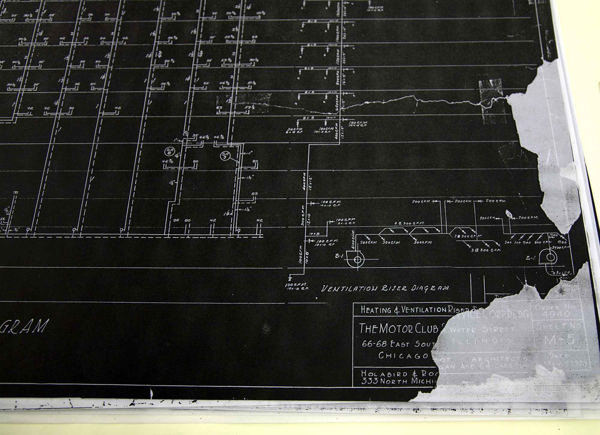
Electrostatic copy of architectural drawings. Courtesy of the Chicago History Museum: Holabird & Root - Chicago Motor Club - Architectural records for buildings by Holabird & Root, 1979.242 ATlot
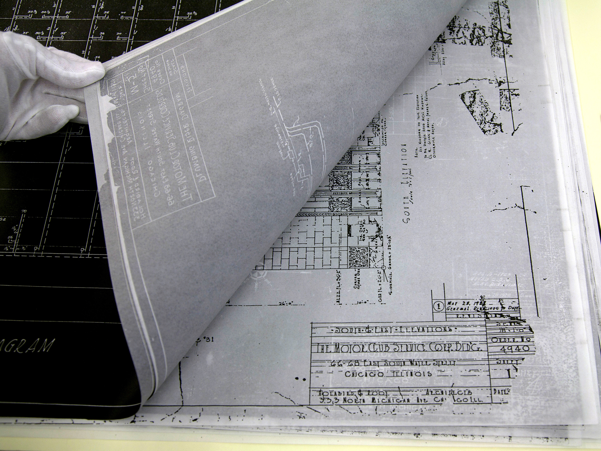
Electrostatic copy of architectural drawings. Courtesy of the Chicago History Museum: Holabird & Root - Chicago Motor Club - Architectural records for buildings by Holabird & Root, 1979.242 ATlot
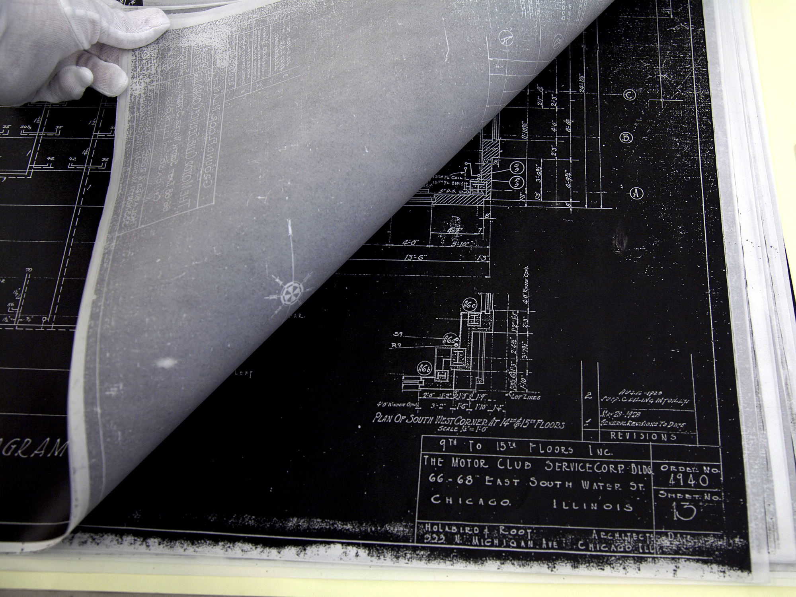
Electrostatic copy of architectural drawings. Courtesy of the Chicago History Museum: Holabird & Root - Chicago Motor Club - Architectural records for buildings by Holabird & Root, 1979.242 ATlot
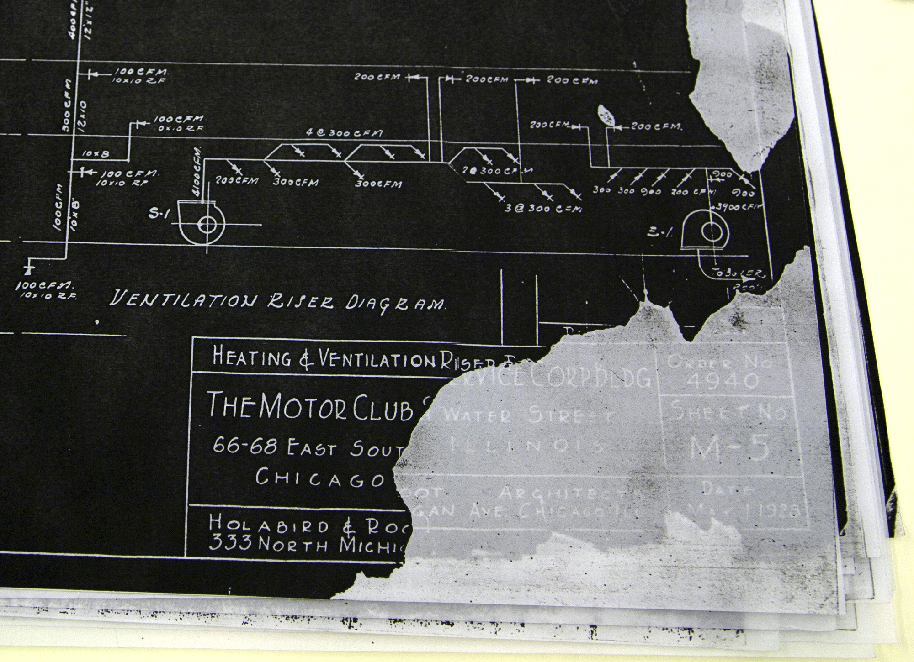
Electrostatic copy of architectural drawings. Courtesy of the Chicago History Museum: Holabird & Root - Chicago Motor Club - Architectural records for buildings by Holabird & Root, 1979.242 ATlot
Synonyms
Photocopy
Xerographic copy
Electrophotography
Plain paper electrostatic copy
Dates
c. 1940 – present
Prevalence
Common
Support
Plain copy paper; polyester transparency film also possible
Paper Fibers
Visible
Ground Color
White, usually off-white (may be slightly discolored)
Image/Text Tone
Monochrome (carbon black)
Description
Electrostatic copies are nearly indistinguishable from other plain paper reprographic processes. The edges of the original scanned document can sometimes be seen in the electrostatic copy if they were not aligned exactly. Other image noise and "artifacts" can be picked up through subsequent copying at high contrast. The toner is made up of an inert resin and carbon black pigment. This continues to be one of the most prevalent copy formats in the world. Photocopying is also a commonly recommended, low-cost reformatting method for other at-risk documents in archival collections.
Composition
Support
Image/Text
Paper (uncoated) or polyester transparency
Black toner (carbon black pigment in resin)
Deterioration
Electrostatic copies tend to be very stable and image permanent as the toner is black carbon pigment in a resin carrier, both of which are inert materials. While proper processing will ensure permanence, it is also dependent upon the quality of the paper.
Electrostatic copies should be stored at moderate temperature and relative humidity. Since the resin binders are thermoplastic polymers with low softening temperatures, avoid storage under conditions of heat and/or pressure. Copy ink can soften and transfer to adjacent surfaces when it comes into contact with polyvinyl chloride plastic. Depending on the quality of its paper support, a black xerox copy can be expected to have good to excellent light stability.
Risk Level
Low. Store in a moderate environment. In addition to polyester storage materials, avoid exposing copies to heat and pressure: any one of these could cause toner loss and transfer to adjacent materials.
Process
Electrostatic copies are made through a five step process. First, a photoconductive selenium plate or drum is charged. The plate or drum is then exposed to a pattern of light from the original document, leaving only the image areas charged. A powdered toner is then applied over the plate or drum which only adheres to the electrostatically charged areas. The sheet of copy paper, which is given an electrical charge of opposite polarity to the plate or drum, is then brought in contact with the plate or drum thus transferring the image. The toner is fused to the paper with heat.
Background
Although xerography was first created in 1938, the first commercial xerographic machines, which were manual, were produced by the Haloid Company (now Xerox Corporation) in 1949. The first semi-automatic machine, the Copyflo, was released in 1955; and a few years later in 1959, Xerox released the first all-in-one copier, the Xerox 914. It was at that point that electrostatic copying began to dominate the office copying market. Single color toners were produced in the late 1950s, but it was not until the Xerox 6500 color copier’s introduction in 1973 that full-color xerography arrived (see Color Photocopy). Since the 1960s, electrostatic copiers have remained the most popular office copying machine due to their simplicity and speed.
Electrostatic prints should not be encapsulated or placed in polyester enclosures. Loose, unbound records should be stored in acid-free file folders.
Prints are usually large, and they are best stored horizontally in flat files, preferably those made of enameled steel, stainless steel, or anodized aluminum. Folders cut to drawer size are recommended, with less than 12 prints to a folder and with interleaving sheets placed between them. Folders and interleaves should be pH neutral or alkaline buffered. Individual prints should be stored in polyester sleeves within folders in order to both protect particularly fragile items and separate formats from one another. Polyester sleeves also provide additional support during handling.
It may be acceptable to store the prints rolled if space for flat storage is not available, but brittle or otherwise fragile prints should not be rolled. Prints that are strong and flexible enough to be rolled must have an interior support: a neutral pH cardboard tube (over 3" diameter) itself wrapped in polyester or neutral paper. The rolled print and interior support may be wrapped in the neutral paper or polyester, and they should be stored horizontally, not upright. Prints should not be folded, since this will create fold lines that weaken the paper and cause it to tear. All storage materials should pass the Photographic Activity Test (PAT) as specified in ISO Standard 18916:2007.
Storage Orientation
Flat (preferred) or rolled.
Display Recommendations
Responsible display practices ensure the long-term preservation of collections. Facsimiles should be used whenever possible, and paper artifacts should not be displayed permanently. Light levels in the exhibition area should be kept low. Appropriate filters should be used to minimize exposure to ultraviolet light. Display cases should be enclosed and sealed to protect their contents, and items in cases should be securely framed or matted using preservation-quality materials that have passed the Photographic Activity Test (ISO 18916:2007).
Light exposure during exhibition should be restricted, especially for dye-based copies and for copies on zinc oxide coated paper. Electrostatic copies may be displayed up to 30,000+ ft-c hours (300,000 lux hours) per year with a 1-year rest between displays.
Related Notes
Oversize Materials
"Oversize" is a designation for items that do not easily fit into the common folder, archival box, or container without being rolled, folded, or placed flat in a file cabinet. For more on the storage of oversized formats, see the NEDCC’s leaflet Storage Solutions For Oversized Paper Artifacts. Handling oversize materials is inherently tricky, especially for one person. To minimize risk, place a thick support (e.g. heavyweight folder or corrugated paper board) under the item as a rigid support when it is being moved about. You can also minimize risk by having someone assist you when transporting or handling oversize materials.
Resources
American National Standards Institute (ANSI). (1988). American National Standard for Imaging Media-Photographic Processed Films, Plates, and Papers-Filing Enclosures and Storage Containers. No. ANSI IT9.2-1988. Retrieved from: https://law.resource.org/pub/us/cfr/ibr/001/aimm.it9.2.1998.pdf
ISO. (2007). 18916 Imaging Materials: Processed imaging materials–Photographic activity test for enclosure materials. Geneva, Switzerland: International Organization for Standardization.
Kissel, E. & Vigneau, E. (1999). Architectural photoreproductions: A manual for identification and care. New Castle, DE: Oak Knoll Press.
National Information Standards Organization. (1995). NISO-TR01-1995: Environmental guidelines for the storage of paper records. Bethesda, MD: NISO Press.